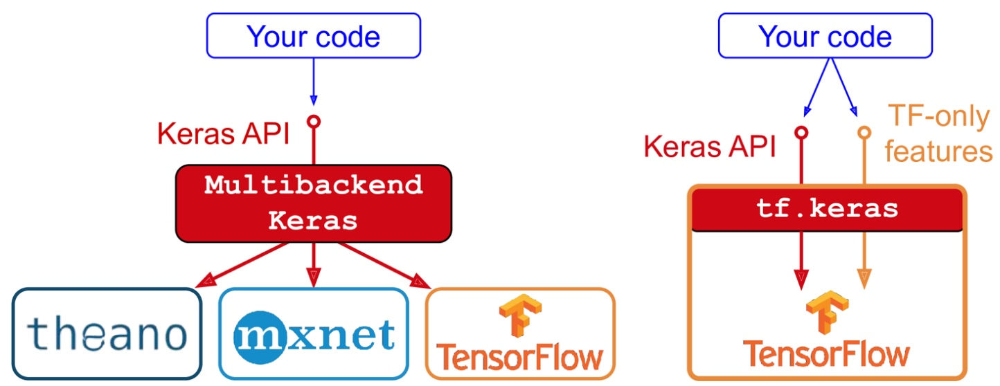
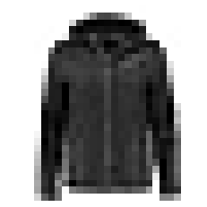
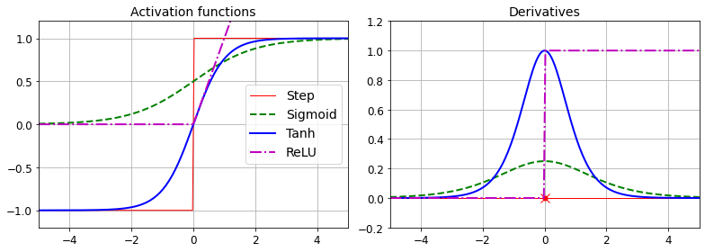
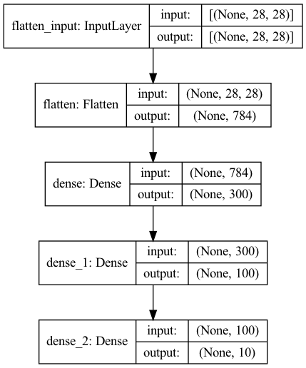
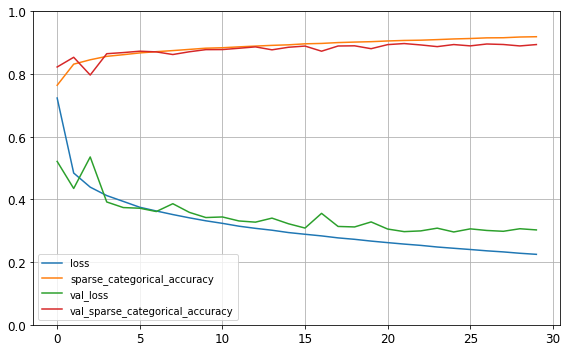
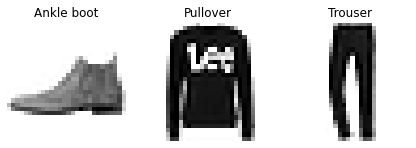
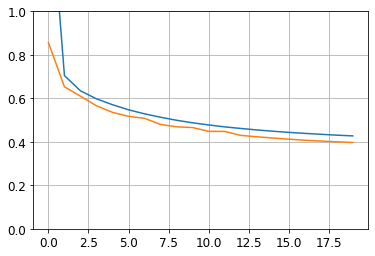
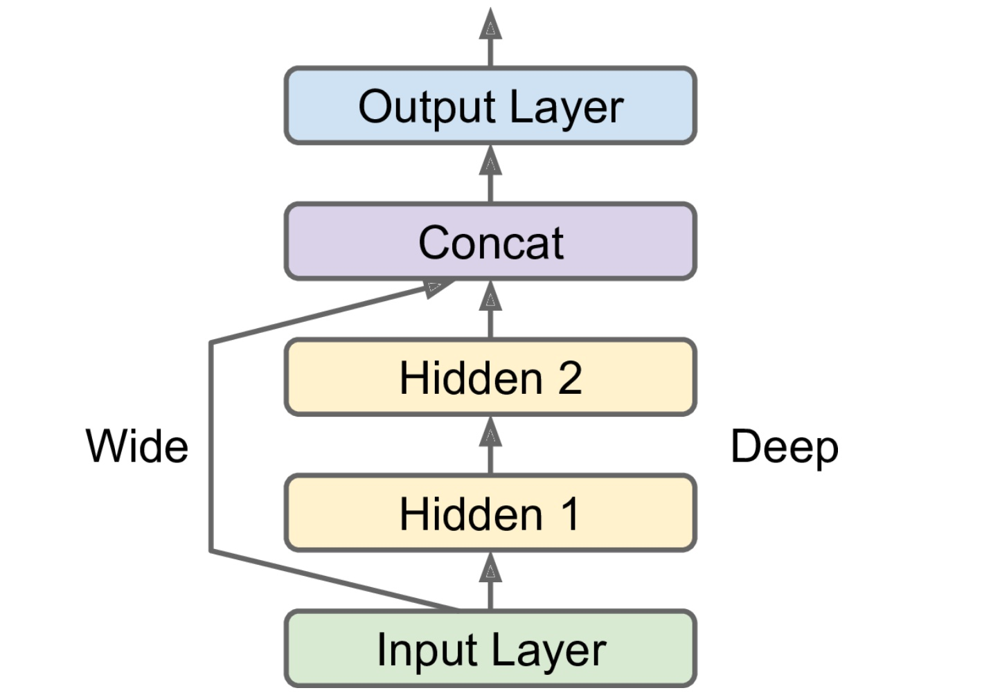
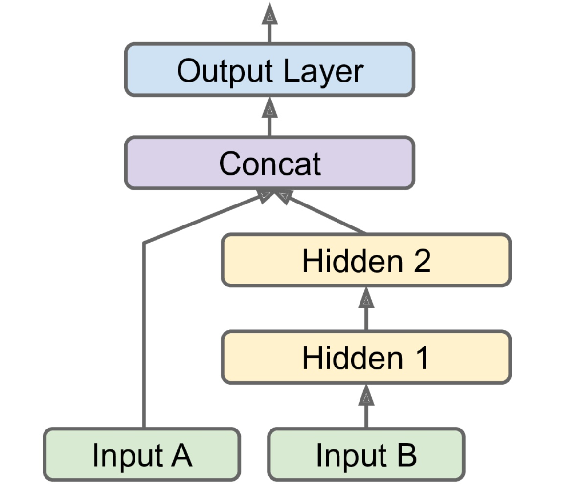
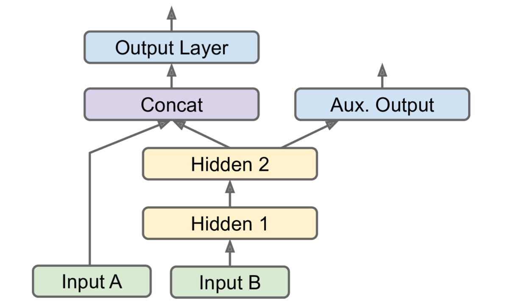

Introduction to Neural Networks with Keras#
All credits to Aurelien Geron, adapted from his book “Hands-on Machine Learning”
{kind=link}
Keras is a high-level Deep Learning API that allows building, training and executing all sorts of NNs.
Its evaluation relies on a compuation backend!
Most popular open source DL libraries:
TensorFlow: Based on python, made by Google
Microsoft Cognitive Toolkit (CNTK): Based on C++
Theano (University of Montreal): Based on python, not in development any more, but still very popular
We will focus on the TF implementation of the Keras API (tf.keras). Multimultibackend also possible!
{kind=link}

A very popular alternative to Keras/TensorFlow is PyTorch
Developed by Facebook
API similar to Keras

Setup#
First, let’s import a few common modules, ensure MatplotLib plots figures inline and prepare a function to save the figures. We also check that Python 3.5 or later is installed, as well as Scikit-Learn ≥0.20 and TensorFlow ≥2.0.
# Python ≥3.5 is required
import sys
assert sys.version_info >= (3, 5)
# Scikit-Learn ≥0.20 is required
import sklearn
assert sklearn.__version__ >= "0.20"
try:
# %tensorflow_version only exists in Colab.
%tensorflow_version 2.x
except Exception:
pass
# TensorFlow ≥2.0 is required
import tensorflow as tf
print(dir(tf))
#assert tf.__version__ >= "2.0"
# Common imports
import numpy as np
import os
['AggregationMethod', 'Assert', 'CriticalSection', 'DType', 'DeviceSpec', 'GradientTape', 'Graph', 'IndexedSlices', 'IndexedSlicesSpec', 'Module', 'Operation', 'OptionalSpec', 'RaggedTensor', 'RaggedTensorSpec', 'RegisterGradient', 'SparseTensor', 'SparseTensorSpec', 'Tensor', 'TensorArray', 'TensorArraySpec', 'TensorShape', 'TensorSpec', 'TypeSpec', 'UnconnectedGradients', 'Variable', 'VariableAggregation', 'VariableSynchronization', '_API_MODULE', '_LazyLoader', '__all__', '__builtins__', '__cached__', '__compiler_version__', '__cxx11_abi_flag__', '__doc__', '__file__', '__git_version__', '__internal__', '__loader__', '__monolithic_build__', '__name__', '__operators__', '__package__', '__path__', '__spec__', '__version__', '_absolute_import', '_api', '_compat', '_current_file_location', '_current_module', '_distutils', '_division', '_estimator_module', '_fi', '_inspect', '_ll', '_logging', '_main_dir', '_major_api_version', '_module_dir', '_module_util', '_names_with_underscore', '_os', '_plugin_dir', '_print_function', '_running_from_pip_package', '_s', '_site', '_site_packages_dirs', '_six', '_sys', '_tf2', '_tf_api_dir', '_typing', 'abs', 'acos', 'acosh', 'add', 'add_n', 'argmax', 'argmin', 'argsort', 'as_dtype', 'as_string', 'asin', 'asinh', 'assert_equal', 'assert_greater', 'assert_less', 'assert_rank', 'atan', 'atan2', 'atanh', 'audio', 'autodiff', 'autograph', 'batch_to_space', 'bfloat16', 'bitcast', 'bitwise', 'bool', 'boolean_mask', 'broadcast_dynamic_shape', 'broadcast_static_shape', 'broadcast_to', 'case', 'cast', 'clip_by_global_norm', 'clip_by_norm', 'clip_by_value', 'compat', 'complex', 'complex128', 'complex64', 'concat', 'cond', 'config', 'constant', 'constant_initializer', 'control_dependencies', 'convert_to_tensor', 'cos', 'cosh', 'cumsum', 'custom_gradient', 'data', 'debugging', 'device', 'distribute', 'divide', 'double', 'dtypes', 'dynamic_partition', 'dynamic_stitch', 'edit_distance', 'eig', 'eigvals', 'einsum', 'ensure_shape', 'equal', 'errors', 'estimator', 'executing_eagerly', 'exp', 'expand_dims', 'experimental', 'extract_volume_patches', 'eye', 'feature_column', 'fill', 'fingerprint', 'float16', 'float32', 'float64', 'floor', 'foldl', 'foldr', 'function', 'gather', 'gather_nd', 'get_logger', 'get_static_value', 'grad_pass_through', 'gradients', 'graph_util', 'greater', 'greater_equal', 'group', 'guarantee_const', 'half', 'hessians', 'histogram_fixed_width', 'histogram_fixed_width_bins', 'identity', 'identity_n', 'image', 'import_graph_def', 'init_scope', 'initializers', 'inside_function', 'int16', 'int32', 'int64', 'int8', 'io', 'is_tensor', 'keras', 'less', 'less_equal', 'linalg', 'linspace', 'lite', 'load_library', 'load_op_library', 'logical_and', 'logical_not', 'logical_or', 'lookup', 'losses', 'make_ndarray', 'make_tensor_proto', 'map_fn', 'math', 'matmul', 'matrix_square_root', 'maximum', 'meshgrid', 'metrics', 'minimum', 'mixed_precision', 'mlir', 'multiply', 'name_scope', 'negative', 'nest', 'newaxis', 'nn', 'no_gradient', 'no_op', 'nondifferentiable_batch_function', 'norm', 'not_equal', 'numpy_function', 'one_hot', 'ones', 'ones_initializer', 'ones_like', 'optimizers', 'pad', 'parallel_stack', 'pow', 'print', 'profiler', 'py_function', 'qint16', 'qint32', 'qint8', 'quantization', 'quantize_and_dequantize_v4', 'queue', 'quint16', 'quint8', 'ragged', 'random', 'random_normal_initializer', 'random_uniform_initializer', 'range', 'rank', 'raw_ops', 'realdiv', 'recompute_grad', 'reduce_all', 'reduce_any', 'reduce_logsumexp', 'reduce_max', 'reduce_mean', 'reduce_min', 'reduce_prod', 'reduce_sum', 'register_tensor_conversion_function', 'repeat', 'required_space_to_batch_paddings', 'reshape', 'resource', 'reverse', 'reverse_sequence', 'roll', 'round', 'saturate_cast', 'saved_model', 'scalar_mul', 'scan', 'scatter_nd', 'searchsorted', 'sequence_mask', 'sets', 'shape', 'shape_n', 'sigmoid', 'sign', 'signal', 'sin', 'sinh', 'size', 'slice', 'sort', 'space_to_batch', 'space_to_batch_nd', 'sparse', 'split', 'sqrt', 'square', 'squeeze', 'stack', 'stop_gradient', 'strided_slice', 'string', 'strings', 'subtract', 'summary', 'switch_case', 'sysconfig', 'tan', 'tanh', 'tensor_scatter_nd_add', 'tensor_scatter_nd_max', 'tensor_scatter_nd_min', 'tensor_scatter_nd_sub', 'tensor_scatter_nd_update', 'tensordot', 'test', 'tile', 'timestamp', 'tools', 'tpu', 'train', 'transpose', 'truediv', 'truncatediv', 'truncatemod', 'tuple', 'type_spec_from_value', 'types', 'uint16', 'uint32', 'uint64', 'uint8', 'unique', 'unique_with_counts', 'unravel_index', 'unstack', 'variable_creator_scope', 'variant', 'vectorized_map', 'version', 'where', 'while_loop', 'xla', 'zeros', 'zeros_initializer', 'zeros_like']
# to make this notebook's output stable across runs
np.random.seed(42)
# To plot pretty figures
%matplotlib inline
import matplotlib as mpl
import matplotlib.pyplot as plt
mpl.rc('axes', labelsize=14)
mpl.rc('xtick', labelsize=12)
mpl.rc('ytick', labelsize=12)
# Where to save the figures
def image_path(fig_id):
return "images/"+fig_id
def save_fig(fig_id, tight_layout=True):
print("Saving figure", fig_id)
if tight_layout:
plt.tight_layout()
plt.savefig(image_path(fig_id) + ".png", format='png', dpi=300)
Building an Image Classifier#
# First let's import TensorFlow and Keras.
import tensorflow as tf
from tensorflow import keras
print(tf.__version__)
print(keras.__version__)
2.4.1
2.4.0
Let’s start by loading the fashion MNIST dataset. Keras has a number of functions to load popular datasets in keras.datasets. The dataset is already split for you between a training set and a test set, but it can be useful to split the training set further to have a validation set:
fashion_mnist = keras.datasets.fashion_mnist
(X_train_full, y_train_full), (X_test, y_test) = fashion_mnist.load_data()
# The training set contains 60,000 grayscale images, each 28x28 pixels:
print(X_train_full.shape)
# Each pixel intensity is represented as a byte (0 to 255):
print(X_train_full.dtype)
(60000, 28, 28)
uint8
#Let's split the full training set into a validation set and a (smaller) training set.
# We also scale the pixel intensities down to the 0-1 range and convert them to floats,
# by dividing by 255.
X_valid, X_train = X_train_full[:5000] / 255., X_train_full[5000:] / 255.
y_valid, y_train = y_train_full[:5000], y_train_full[5000:]
X_test = X_test / 255.
#You can plot an image using Matplotlib's `imshow()` function,
# with a "binary" color map:
plt.imshow(X_train[0], cmap="binary")
plt.axis('off')
plt.show()

# The labels are the class IDs (represented as uint8), from 0 to 9:
print(y_train)
# Here are the corresponding class names:
class_names = ["T-shirt/top", "Trouser", "Pullover", "Dress", "Coat",
"Sandal", "Shirt", "Sneaker", "Bag", "Ankle boot"]
# So the first image in the training set is a coat:
print(class_names[y_train[0]])
[4 0 7 ... 3 0 5]
Coat
# The validation set contains 5,000 images, and the test set contains 10,000 images:
print(X_valid.shape)
print(X_test.shape)
(5000, 28, 28)
(10000, 28, 28)
# Let's take a look at a sample of the images in the dataset:
n_rows = 4
n_cols = 10
plt.figure(figsize=(n_cols * 1.2, n_rows * 1.2))
for row in range(n_rows):
for col in range(n_cols):
index = n_cols * row + col
plt.subplot(n_rows, n_cols, index + 1)
plt.imshow(X_train[index], cmap="binary", interpolation="nearest")
plt.axis('off')
plt.title(class_names[y_train[index]], fontsize=12)
plt.subplots_adjust(wspace=0.2, hspace=0.5)
save_fig('fashion_mnist_plot', tight_layout=False)
plt.show()
Saving figure fashion_mnist_plot
## This is how a simple DNN in Keras would look like!
## Layers with N neurons and activation functions
model = keras.models.Sequential()
model.add(keras.layers.Flatten(input_shape=[28, 28]))
model.add(keras.layers.Dense(300, activation="relu"))
model.add(keras.layers.Dense(100, activation="relu"))
model.add(keras.layers.Dense(10, activation="softmax"))
Activation functions#
def sigmoid(z):
return 1 / (1 + np.exp(-z))
def relu(z):
return np.maximum(0, z)
def derivative(f, z, eps=0.000001):
return (f(z + eps) - f(z - eps))/(2 * eps)
z = np.linspace(-5, 5, 200)
plt.figure(figsize=(11,4))
plt.subplot(121)
plt.plot(z, np.sign(z), "r-", linewidth=1, label="Step")
plt.plot(z, sigmoid(z), "g--", linewidth=2, label="Sigmoid")
plt.plot(z, np.tanh(z), "b-", linewidth=2, label="Tanh")
plt.plot(z, relu(z), "m-.", linewidth=2, label="ReLU")
plt.grid(True)
plt.legend(loc="center right", fontsize=14)
plt.title("Activation functions", fontsize=14)
plt.axis([-5, 5, -1.2, 1.2])
plt.subplot(122)
plt.plot(z, derivative(np.sign, z), "r-", linewidth=1, label="Step")
plt.plot(0, 0, "ro", markersize=5)
plt.plot(0, 0, "rx", markersize=10)
plt.plot(z, derivative(sigmoid, z), "g--", linewidth=2, label="Sigmoid")
plt.plot(z, derivative(np.tanh, z), "b-", linewidth=2, label="Tanh")
plt.plot(z, derivative(relu, z), "m-.", linewidth=2, label="ReLU")
plt.grid(True)
#plt.legend(loc="center right", fontsize=14)
plt.title("Derivatives", fontsize=14)
plt.axis([-5, 5, -0.2, 1.2])
figname = "activation_functions_plot"
save_fig(figname)
plt.show()
Saving figure activation_functions_plot

Sequential model#
## these lines are for reproducibility and to clear any remains from previous networks!
keras.backend.clear_session()
np.random.seed(42)
tf.random.set_seed(42)
model = keras.models.Sequential([
## computes X.reshape(-1, 1), simple preprocessing. Argument: shape of instances
keras.layers.Flatten(input_shape=[28, 28]),
## dense layers: each of the 300 neurons connected to every input
keras.layers.Dense(300, activation="relu"),
keras.layers.Dense(100, activation="relu"),
## output with neuron per class (10). Softmax activation function
## (because the classes are exclusive).
keras.layers.Dense(10, activation="softmax")
])
print(model.layers)
[<tensorflow.python.keras.layers.core.Flatten object at 0x131158890>, <tensorflow.python.keras.layers.core.Dense object at 0x131267d50>, <tensorflow.python.keras.layers.core.Dense object at 0x131272950>, <tensorflow.python.keras.layers.core.Dense object at 0x131255b50>]
model.summary()
## plenty of parameters!
## e.g. first layer: 784 × 300 connection weights, plus 300 bias terms
## 'None' means that batch size can be anything
Model: "sequential"
_________________________________________________________________
Layer (type) Output Shape Param #
=================================================================
flatten (Flatten) (None, 784) 0
_________________________________________________________________
dense (Dense) (None, 300) 235500
_________________________________________________________________
dense_1 (Dense) (None, 100) 30100
_________________________________________________________________
dense_2 (Dense) (None, 10) 1010
=================================================================
Total params: 266,610
Trainable params: 266,610
Non-trainable params: 0
_________________________________________________________________
keras.utils.plot_model(model, "my_fashion_mnist_model.png", show_shapes=True)

## initialized the connection weights randomly (important)
hidden1 = model.layers[1]
weights, biases = hidden1.get_weights()
print(weights)
[[ 0.02448617 -0.00877795 -0.02189048 ... -0.02766046 0.03859074
-0.06889391]
[ 0.00476504 -0.03105379 -0.0586676 ... 0.00602964 -0.02763776
-0.04165364]
[-0.06189284 -0.06901957 0.07102345 ... -0.04238207 0.07121518
-0.07331658]
...
[-0.03048757 0.02155137 -0.05400612 ... -0.00113463 0.00228987
0.05581069]
[ 0.07061854 -0.06960931 0.07038955 ... -0.00384101 0.00034875
0.02878492]
[-0.06022581 0.01577859 -0.02585464 ... -0.00527829 0.00272203
-0.06793761]]
print(weights.shape)
print(biases)
print(biases.shape)
(784, 300)
[0. 0. 0. 0. 0. 0. 0. 0. 0. 0. 0. 0. 0. 0. 0. 0. 0. 0. 0. 0. 0. 0. 0. 0.
0. 0. 0. 0. 0. 0. 0. 0. 0. 0. 0. 0. 0. 0. 0. 0. 0. 0. 0. 0. 0. 0. 0. 0.
0. 0. 0. 0. 0. 0. 0. 0. 0. 0. 0. 0. 0. 0. 0. 0. 0. 0. 0. 0. 0. 0. 0. 0.
0. 0. 0. 0. 0. 0. 0. 0. 0. 0. 0. 0. 0. 0. 0. 0. 0. 0. 0. 0. 0. 0. 0. 0.
0. 0. 0. 0. 0. 0. 0. 0. 0. 0. 0. 0. 0. 0. 0. 0. 0. 0. 0. 0. 0. 0. 0. 0.
0. 0. 0. 0. 0. 0. 0. 0. 0. 0. 0. 0. 0. 0. 0. 0. 0. 0. 0. 0. 0. 0. 0. 0.
0. 0. 0. 0. 0. 0. 0. 0. 0. 0. 0. 0. 0. 0. 0. 0. 0. 0. 0. 0. 0. 0. 0. 0.
0. 0. 0. 0. 0. 0. 0. 0. 0. 0. 0. 0. 0. 0. 0. 0. 0. 0. 0. 0. 0. 0. 0. 0.
0. 0. 0. 0. 0. 0. 0. 0. 0. 0. 0. 0. 0. 0. 0. 0. 0. 0. 0. 0. 0. 0. 0. 0.
0. 0. 0. 0. 0. 0. 0. 0. 0. 0. 0. 0. 0. 0. 0. 0. 0. 0. 0. 0. 0. 0. 0. 0.
0. 0. 0. 0. 0. 0. 0. 0. 0. 0. 0. 0. 0. 0. 0. 0. 0. 0. 0. 0. 0. 0. 0. 0.
0. 0. 0. 0. 0. 0. 0. 0. 0. 0. 0. 0. 0. 0. 0. 0. 0. 0. 0. 0. 0. 0. 0. 0.
0. 0. 0. 0. 0. 0. 0. 0. 0. 0. 0. 0.]
(300,)
## specify the loss function and the optimizer to use.
## Possible specify a list of extra metrics to compute during
## training and evaluation:
model.compile(loss="sparse_categorical_crossentropy",
optimizer="sgd",
metrics=["accuracy"])
## This is equivalent to:
model.compile(loss=keras.losses.sparse_categorical_crossentropy,
optimizer=keras.optimizers.SGD(),
metrics=[keras.metrics.sparse_categorical_accuracy])
“sparse_categorical_cross entropy” loss because of sparse labels
for each instance there is just a target class index and the classes are exclusive
If one target probability per class for each instance (à la soft-voting) “categorical_crossentropy” loss
For binary classification, use “sigmoid” (i.e., logistic) activation function in the output layer instead of the “softmax” activation function, and we would use the “binary_crossentropy” loss.
For the optimizer, “sgd” means that we will train the model using simple Stochastic Gradient Descent. Keras will perform the backpropagation algorithm (i.e., reverse-mode autodiff plus Gradient Descent)
Finally, useful to measure its “accuracy” during training and evaluation.
## finally, fit the data (first time data enters in the code)
#We also pass a validation set (this is optional).
#Useful to measure the loss and the extra metrics on this set at the end of each epoch,
history = model.fit(X_train, y_train, epochs=30,
validation_data=(X_valid, y_valid))
Epoch 1/30
1719/1719 [==============================] - 13s 7ms/step - loss: 1.0187 - sparse_categorical_accuracy: 0.6805 - val_loss: 0.5213 - val_sparse_categorical_accuracy: 0.8226
Epoch 2/30
1719/1719 [==============================] - 11s 6ms/step - loss: 0.5028 - sparse_categorical_accuracy: 0.8262 - val_loss: 0.4350 - val_sparse_categorical_accuracy: 0.8536
Epoch 3/30
1719/1719 [==============================] - 10s 6ms/step - loss: 0.4485 - sparse_categorical_accuracy: 0.8423 - val_loss: 0.5355 - val_sparse_categorical_accuracy: 0.7970
Epoch 4/30
1719/1719 [==============================] - 12s 7ms/step - loss: 0.4209 - sparse_categorical_accuracy: 0.8530 - val_loss: 0.3919 - val_sparse_categorical_accuracy: 0.8650
Epoch 5/30
1719/1719 [==============================] - 13s 7ms/step - loss: 0.4060 - sparse_categorical_accuracy: 0.8586 - val_loss: 0.3741 - val_sparse_categorical_accuracy: 0.8686
Epoch 6/30
1719/1719 [==============================] - 12s 7ms/step - loss: 0.3752 - sparse_categorical_accuracy: 0.8672 - val_loss: 0.3720 - val_sparse_categorical_accuracy: 0.8730
Epoch 7/30
1719/1719 [==============================] - 12s 7ms/step - loss: 0.3652 - sparse_categorical_accuracy: 0.8707 - val_loss: 0.3614 - val_sparse_categorical_accuracy: 0.8708
Epoch 8/30
1719/1719 [==============================] - 12s 7ms/step - loss: 0.3481 - sparse_categorical_accuracy: 0.8758 - val_loss: 0.3864 - val_sparse_categorical_accuracy: 0.8624
Epoch 9/30
1719/1719 [==============================] - 11s 6ms/step - loss: 0.3486 - sparse_categorical_accuracy: 0.8752 - val_loss: 0.3588 - val_sparse_categorical_accuracy: 0.8712
Epoch 10/30
1719/1719 [==============================] - 15s 9ms/step - loss: 0.3294 - sparse_categorical_accuracy: 0.8841 - val_loss: 0.3422 - val_sparse_categorical_accuracy: 0.8780
Epoch 11/30
1719/1719 [==============================] - 14s 8ms/step - loss: 0.3215 - sparse_categorical_accuracy: 0.8837 - val_loss: 0.3441 - val_sparse_categorical_accuracy: 0.8782
Epoch 12/30
1719/1719 [==============================] - 13s 8ms/step - loss: 0.3120 - sparse_categorical_accuracy: 0.8874 - val_loss: 0.3314 - val_sparse_categorical_accuracy: 0.8824
Epoch 13/30
1719/1719 [==============================] - 16s 9ms/step - loss: 0.3050 - sparse_categorical_accuracy: 0.8899 - val_loss: 0.3275 - val_sparse_categorical_accuracy: 0.8868
Epoch 14/30
1719/1719 [==============================] - 12s 7ms/step - loss: 0.2986 - sparse_categorical_accuracy: 0.8917 - val_loss: 0.3404 - val_sparse_categorical_accuracy: 0.8774
Epoch 15/30
1719/1719 [==============================] - 11s 7ms/step - loss: 0.2928 - sparse_categorical_accuracy: 0.8941 - val_loss: 0.3224 - val_sparse_categorical_accuracy: 0.8856
Epoch 16/30
1719/1719 [==============================] - 11s 6ms/step - loss: 0.2860 - sparse_categorical_accuracy: 0.8972 - val_loss: 0.3087 - val_sparse_categorical_accuracy: 0.8894
Epoch 17/30
1719/1719 [==============================] - 14s 8ms/step - loss: 0.2776 - sparse_categorical_accuracy: 0.9011 - val_loss: 0.3556 - val_sparse_categorical_accuracy: 0.8730
Epoch 18/30
1719/1719 [==============================] - 8s 5ms/step - loss: 0.2773 - sparse_categorical_accuracy: 0.8998 - val_loss: 0.3138 - val_sparse_categorical_accuracy: 0.8896
Epoch 19/30
1719/1719 [==============================] - 10s 6ms/step - loss: 0.2739 - sparse_categorical_accuracy: 0.9020 - val_loss: 0.3123 - val_sparse_categorical_accuracy: 0.8902
Epoch 20/30
1719/1719 [==============================] - 18s 10ms/step - loss: 0.2693 - sparse_categorical_accuracy: 0.9035 - val_loss: 0.3282 - val_sparse_categorical_accuracy: 0.8810
Epoch 21/30
1719/1719 [==============================] - 15s 8ms/step - loss: 0.2670 - sparse_categorical_accuracy: 0.9051 - val_loss: 0.3056 - val_sparse_categorical_accuracy: 0.8940
Epoch 22/30
1719/1719 [==============================] - 12s 7ms/step - loss: 0.2611 - sparse_categorical_accuracy: 0.9049 - val_loss: 0.2973 - val_sparse_categorical_accuracy: 0.8974
Epoch 23/30
1719/1719 [==============================] - 13s 8ms/step - loss: 0.2549 - sparse_categorical_accuracy: 0.9073 - val_loss: 0.2996 - val_sparse_categorical_accuracy: 0.8930
Epoch 24/30
1719/1719 [==============================] - 17s 10ms/step - loss: 0.2446 - sparse_categorical_accuracy: 0.9119 - val_loss: 0.3084 - val_sparse_categorical_accuracy: 0.8876
Epoch 25/30
1719/1719 [==============================] - 20s 11ms/step - loss: 0.2491 - sparse_categorical_accuracy: 0.9106 - val_loss: 0.2962 - val_sparse_categorical_accuracy: 0.8942
Epoch 26/30
1719/1719 [==============================] - 17s 10ms/step - loss: 0.2423 - sparse_categorical_accuracy: 0.9132 - val_loss: 0.3061 - val_sparse_categorical_accuracy: 0.8900
Epoch 27/30
1719/1719 [==============================] - 20s 11ms/step - loss: 0.2372 - sparse_categorical_accuracy: 0.9160 - val_loss: 0.3010 - val_sparse_categorical_accuracy: 0.8960
Epoch 28/30
1719/1719 [==============================] - 20s 12ms/step - loss: 0.2313 - sparse_categorical_accuracy: 0.9163 - val_loss: 0.2984 - val_sparse_categorical_accuracy: 0.8944
Epoch 29/30
1719/1719 [==============================] - 31s 18ms/step - loss: 0.2276 - sparse_categorical_accuracy: 0.9175 - val_loss: 0.3065 - val_sparse_categorical_accuracy: 0.8898cal_accuracy
Epoch 30/30
1719/1719 [==============================] - 21s 12ms/step - loss: 0.2247 - sparse_categorical_accuracy: 0.9209 - val_loss: 0.3028 - val_sparse_categorical_accuracy: 0.8942
## history contains the training parameters (history.params),
## list of epochs it went through (history.epoch), and a dictionary
## (history.history) containing the loss and extra metrics it measured
## at the end of each epoch on the training and on the validation sets
print(history.params)
print(history.epoch)
history.history.keys()
{'verbose': 1, 'epochs': 30, 'steps': 1719}
[0, 1, 2, 3, 4, 5, 6, 7, 8, 9, 10, 11, 12, 13, 14, 15, 16, 17, 18, 19, 20, 21, 22, 23, 24, 25, 26, 27, 28, 29]
dict_keys(['loss', 'sparse_categorical_accuracy', 'val_loss', 'val_sparse_categorical_accuracy'])
import pandas as pd
pd.DataFrame(history.history).plot(figsize=(8, 5))
plt.grid(True)
plt.gca().set_ylim(0, 1)
save_fig("keras_learning_curves_plot")
plt.show()
Saving figure keras_learning_curves_plot

## if needed, we could continue training
## Keras will retake it from where it left it!
model.evaluate(X_test, y_test)
313/313 [==============================] - 2s 6ms/step - loss: 0.3372 - sparse_categorical_accuracy: 0.8825
[0.33723148703575134, 0.8824999928474426]
## now we can predict on new instances!
X_new = X_test[:3]
y_proba = model.predict(X_new)
y_proba.round(2)
array([[0. , 0. , 0. , 0. , 0. , 0.01, 0. , 0.03, 0. , 0.96],
[0. , 0. , 0.98, 0. , 0.02, 0. , 0. , 0. , 0. , 0. ],
[0. , 1. , 0. , 0. , 0. , 0. , 0. , 0. , 0. , 0. ]],
dtype=float32)
# and see which are the most likely classes
y_pred = np.argmax(model.predict(X_new), axis=-1)
print(y_pred)
print(np.array(class_names)[y_pred])
y_new = y_test[:3]
print(y_new)
[9 2 1]
['Ankle boot' 'Pullover' 'Trouser']
[9 2 1]
plt.figure(figsize=(7.2, 2.4))
for index, image in enumerate(X_new):
plt.subplot(1, 3, index + 1)
plt.imshow(image, cmap="binary", interpolation="nearest")
plt.axis('off')
plt.title(class_names[y_test[index]], fontsize=12)
plt.subplots_adjust(wspace=0.2, hspace=0.5)
save_fig('fashion_mnist_images_plot', tight_layout=False)
plt.show()
Saving figure fashion_mnist_images_plot

Regression MLP#
## California housing dataset
from sklearn.datasets import fetch_california_housing
from sklearn.model_selection import train_test_split
from sklearn.preprocessing import StandardScaler
housing = fetch_california_housing()
X_train_full, X_test, y_train_full, y_test = train_test_split(housing.data, housing.target, random_state=42)
X_train, X_valid, y_train, y_valid = train_test_split(X_train_full, y_train_full, random_state=42)
scaler = StandardScaler()
X_train = scaler.fit_transform(X_train)
X_valid = scaler.transform(X_valid)
X_test = scaler.transform(X_test)
## same as before
np.random.seed(42)
tf.random.set_seed(42)
## note different loss function!
model = keras.models.Sequential([
keras.layers.Dense(30, activation="relu", input_shape=X_train.shape[1:]),
## output layer with single neuron
keras.layers.Dense(1)
])
## lr is the learning rate (tunable)
model.compile(loss="mean_squared_error", optimizer=keras.optimizers.SGD(lr=1e-3))
## same as before...
history = model.fit(X_train, y_train, epochs=20, validation_data=(X_valid, y_valid))
mse_test = model.evaluate(X_test, y_test)
X_new = X_test[:3]
y_pred = model.predict(X_new)
print(y_pred)
Epoch 1/20
363/363 [==============================] - 3s 5ms/step - loss: 2.2656 - val_loss: 0.8560
Epoch 2/20
363/363 [==============================] - 2s 6ms/step - loss: 0.7413 - val_loss: 0.6531
Epoch 3/20
363/363 [==============================] - 2s 6ms/step - loss: 0.6604 - val_loss: 0.6099
Epoch 4/20
363/363 [==============================] - 2s 5ms/step - loss: 0.6245 - val_loss: 0.5658
Epoch 5/20
363/363 [==============================] - 2s 4ms/step - loss: 0.5770 - val_loss: 0.5355
Epoch 6/20
363/363 [==============================] - 2s 4ms/step - loss: 0.5609 - val_loss: 0.5173
Epoch 7/20
363/363 [==============================] - 1s 3ms/step - loss: 0.5500 - val_loss: 0.5081
Epoch 8/20
363/363 [==============================] - 1s 3ms/step - loss: 0.5200 - val_loss: 0.4799
Epoch 9/20
363/363 [==============================] - 1s 3ms/step - loss: 0.5051 - val_loss: 0.4690
Epoch 10/20
363/363 [==============================] - 1s 4ms/step - loss: 0.4910 - val_loss: 0.4656
Epoch 11/20
363/363 [==============================] - 1s 4ms/step - loss: 0.4794 - val_loss: 0.4482
Epoch 12/20
363/363 [==============================] - 2s 4ms/step - loss: 0.4656 - val_loss: 0.4479
Epoch 13/20
363/363 [==============================] - 2s 4ms/step - loss: 0.4693 - val_loss: 0.4296
Epoch 14/20
363/363 [==============================] - 4s 11ms/step - loss: 0.4537 - val_loss: 0.4233
Epoch 15/20
363/363 [==============================] - 3s 9ms/step - loss: 0.4586 - val_loss: 0.4176
Epoch 16/20
363/363 [==============================] - 3s 10ms/step - loss: 0.4612 - val_loss: 0.4123
Epoch 17/20
363/363 [==============================] - 2s 6ms/step - loss: 0.4449 - val_loss: 0.4071
Epoch 18/20
363/363 [==============================] - 1s 3ms/step - loss: 0.4407 - val_loss: 0.4037
Epoch 19/20
363/363 [==============================] - 1s 4ms/step - loss: 0.4184 - val_loss: 0.4000
Epoch 20/20
363/363 [==============================] - 1s 3ms/step - loss: 0.4128 - val_loss: 0.3969
162/162 [==============================] - 0s 2ms/step - loss: 0.4212
[[0.3885664]
[1.6792021]
[3.1022797]]
plt.plot(pd.DataFrame(history.history))
plt.grid(True)
plt.gca().set_ylim(0, 1)
plt.show()

Functional API#
Not all neural network models are simply sequential.
Wide & Deep neural network

{kind=link}
np.random.seed(42)
tf.random.set_seed(42)
input_ = keras.layers.Input(shape=X_train.shape[1:])
## we create a Dense layer with 30 neurons, using the ReLU activation function.
## We call it like a function, passing it the input!
## This is why this is called the Functional API
hidden1 = keras.layers.Dense(30, activation="relu")(input_)
hidden2 = keras.layers.Dense(30, activation="relu")(hidden1)
## Concatenate layer, immediately use it like a function,
## concatenates the input and the output of the second hidden layer
concat = keras.layers.concatenate([input_, hidden2])
output = keras.layers.Dense(1)(concat)
## finally create the model
model = keras.models.Model(inputs=[input_], outputs=[output])
model.summary()
Model: "model"
__________________________________________________________________________________________________
Layer (type) Output Shape Param # Connected to
==================================================================================================
input_1 (InputLayer) [(None, 8)] 0
__________________________________________________________________________________________________
dense_5 (Dense) (None, 30) 270 input_1[0][0]
__________________________________________________________________________________________________
dense_6 (Dense) (None, 30) 930 dense_5[0][0]
__________________________________________________________________________________________________
concatenate (Concatenate) (None, 38) 0 input_1[0][0]
dense_6[0][0]
__________________________________________________________________________________________________
dense_7 (Dense) (None, 1) 39 concatenate[0][0]
==================================================================================================
Total params: 1,239
Trainable params: 1,239
Non-trainable params: 0
__________________________________________________________________________________________________
model.compile(loss="mean_squared_error", optimizer=keras.optimizers.SGD(lr=1e-3))
history = model.fit(X_train, y_train, epochs=20,
validation_data=(X_valid, y_valid))
mse_test = model.evaluate(X_test, y_test)
y_pred = model.predict(X_new)
Epoch 1/20
363/363 [==============================] - 7s 11ms/step - loss: 1.9731 - val_loss: 3.3940
Epoch 2/20
363/363 [==============================] - 3s 9ms/step - loss: 0.7638 - val_loss: 0.9360
Epoch 3/20
363/363 [==============================] - 3s 8ms/step - loss: 0.6045 - val_loss: 0.5649
Epoch 4/20
363/363 [==============================] - 1s 4ms/step - loss: 0.5862 - val_loss: 0.5712
Epoch 5/20
363/363 [==============================] - 1s 4ms/step - loss: 0.5452 - val_loss: 0.5045
Epoch 6/20
363/363 [==============================] - 2s 5ms/step - loss: 0.5243 - val_loss: 0.4831
Epoch 7/20
363/363 [==============================] - 1s 3ms/step - loss: 0.5185 - val_loss: 0.4639
Epoch 8/20
363/363 [==============================] - 1s 3ms/step - loss: 0.4947 - val_loss: 0.4638
Epoch 9/20
363/363 [==============================] - 2s 5ms/step - loss: 0.4782 - val_loss: 0.4421
Epoch 10/20
363/363 [==============================] - 1s 3ms/step - loss: 0.4708 - val_loss: 0.4313
Epoch 11/20
363/363 [==============================] - 1s 3ms/step - loss: 0.4585 - val_loss: 0.4345
Epoch 12/20
363/363 [==============================] - 1s 3ms/step - loss: 0.4481 - val_loss: 0.4168
Epoch 13/20
363/363 [==============================] - 2s 4ms/step - loss: 0.4476 - val_loss: 0.4230
Epoch 14/20
363/363 [==============================] - 1s 3ms/step - loss: 0.4361 - val_loss: 0.4047
Epoch 15/20
363/363 [==============================] - 1s 3ms/step - loss: 0.4392 - val_loss: 0.4078
Epoch 16/20
363/363 [==============================] - 1s 3ms/step - loss: 0.4420 - val_loss: 0.3938
Epoch 17/20
363/363 [==============================] - 1s 3ms/step - loss: 0.4277 - val_loss: 0.3952
Epoch 18/20
363/363 [==============================] - 1s 3ms/step - loss: 0.4216 - val_loss: 0.3860
Epoch 19/20
363/363 [==============================] - 1s 3ms/step - loss: 0.4033 - val_loss: 0.3827
Epoch 20/20
363/363 [==============================] - 2s 6ms/step - loss: 0.3939 - val_loss: 0.4054
162/162 [==============================] - 0s 3ms/step - loss: 0.4032
Also possible to send different subsets of input features through the wide or deep paths.
Send different features through both paths

{kind=link}
## Send 5 features (features 0 to 4), and 6 through the deep path (features 2 to 7).
## Note that 3 features will go through both (features 2, 3 and 4).
np.random.seed(42)
tf.random.set_seed(42)
input_A = keras.layers.Input(shape=[5], name="wide_input")
input_B = keras.layers.Input(shape=[6], name="deep_input")
hidden1 = keras.layers.Dense(30, activation="relu")(input_B)
hidden2 = keras.layers.Dense(30, activation="relu")(hidden1)
## very similar to before!
concat = keras.layers.concatenate([input_A, hidden2])
output = keras.layers.Dense(1, name="output")(concat)
## must specify that we now have two outputs...
model = keras.models.Model(inputs=[input_A, input_B], outputs=[output])
## compile the model
model.compile(loss="mse", optimizer=keras.optimizers.SGD(lr=1e-3))
## prepare the data (note we split the inputs)
X_train_A, X_train_B = X_train[:, :5], X_train[:, 2:]
X_valid_A, X_valid_B = X_valid[:, :5], X_valid[:, 2:]
X_test_A, X_test_B = X_test[:, :5], X_test[:, 2:]
X_new_A, X_new_B = X_test_A[:3], X_test_B[:3]
## fit, evaluate and predict
## we've got now two input sets for train, valid and test!
history = model.fit((X_train_A, X_train_B), y_train, epochs=20,
validation_data=((X_valid_A, X_valid_B), y_valid))
mse_test = model.evaluate((X_test_A, X_test_B), y_test)
y_pred = model.predict((X_new_A, X_new_B))
Epoch 1/20
363/363 [==============================] - 3s 5ms/step - loss: 3.1941 - val_loss: 0.8072
Epoch 2/20
363/363 [==============================] - 2s 5ms/step - loss: 0.7247 - val_loss: 0.6658
Epoch 3/20
363/363 [==============================] - 2s 5ms/step - loss: 0.6176 - val_loss: 0.5687
Epoch 4/20
363/363 [==============================] - 2s 5ms/step - loss: 0.5799 - val_loss: 0.5296
Epoch 5/20
363/363 [==============================] - 3s 9ms/step - loss: 0.5409 - val_loss: 0.4993
Epoch 6/20
363/363 [==============================] - 2s 7ms/step - loss: 0.5173 - val_loss: 0.4811
Epoch 7/20
363/363 [==============================] - 4s 10ms/step - loss: 0.5186 - val_loss: 0.4696
Epoch 8/20
363/363 [==============================] - 3s 8ms/step - loss: 0.4977 - val_loss: 0.4496
Epoch 9/20
363/363 [==============================] - 1s 3ms/step - loss: 0.4765 - val_loss: 0.4404
Epoch 10/20
363/363 [==============================] - 2s 4ms/step - loss: 0.4676 - val_loss: 0.4315
Epoch 11/20
363/363 [==============================] - 6s 17ms/step - loss: 0.4574 - val_loss: 0.4268
Epoch 12/20
363/363 [==============================] - 5s 14ms/step - loss: 0.4479 - val_loss: 0.4166
Epoch 13/20
363/363 [==============================] - 2s 5ms/step - loss: 0.4487 - val_loss: 0.4125
Epoch 14/20
363/363 [==============================] - 3s 8ms/step - loss: 0.4469 - val_loss: 0.4074
Epoch 15/20
363/363 [==============================] - 4s 11ms/step - loss: 0.4460 - val_loss: 0.4044
Epoch 16/20
363/363 [==============================] - 1s 4ms/step - loss: 0.4495 - val_loss: 0.4007
Epoch 17/20
363/363 [==============================] - 2s 4ms/step - loss: 0.4378 - val_loss: 0.4013
Epoch 18/20
363/363 [==============================] - 2s 5ms/step - loss: 0.4375 - val_loss: 0.3987
Epoch 19/20
363/363 [==============================] - 2s 7ms/step - loss: 0.4151 - val_loss: 0.3934
Epoch 20/20
363/363 [==============================] - 1s 3ms/step - loss: 0.4078 - val_loss: 0.4204
162/162 [==============================] - 0s 1ms/step - loss: 0.4219
Yet another alternative, adding additional outputs
Requried by task, e.g., locate and classify the main object in a picture
Multiple independent tasks based on the same data, e.g., multitask classification (happy or not, man or woman)
Regularization: Auxiliary outputs to ensure that the underlying part of the network learns something useful on its own

{kind=link}
np.random.seed(42)
tf.random.set_seed(42)
input_A = keras.layers.Input(shape=[5], name="wide_input")
input_B = keras.layers.Input(shape=[6], name="deep_input")
hidden1 = keras.layers.Dense(30, activation="relu")(input_B)
hidden2 = keras.layers.Dense(30, activation="relu")(hidden1)
concat = keras.layers.concatenate([input_A, hidden2])
output = keras.layers.Dense(1, name="main_output")(concat)
## design the additional output, specify it in the model
aux_output = keras.layers.Dense(1, name="aux_output")(hidden2)
model = keras.models.Model(inputs=[input_A, input_B],
outputs=[output, aux_output])
## Each output will need its own loss function! Pass a list of losses
## Keras will compute all these losses and simply add them up to get the final loss
## Possible to set all the loss weights when compiling the model:
model.compile(loss=["mse", "mse"], loss_weights=[0.9, 0.1], optimizer=keras.optimizers.SGD(lr=1e-3))
## We need to provide labels for each output.
## Here, the main and auxiliary outputs predict the same thing.
## Just use the same labels!
history = model.fit([X_train_A, X_train_B], [y_train, y_train], epochs=20,
validation_data=([X_valid_A, X_valid_B], [y_valid, y_valid]))
Epoch 1/20
363/363 [==============================] - 3s 4ms/step - loss: 3.4633 - main_output_loss: 3.3289 - aux_output_loss: 4.6732 - val_loss: 1.6233 - val_main_output_loss: 0.8468 - val_aux_output_loss: 8.6117
Epoch 2/20
363/363 [==============================] - 2s 5ms/step - loss: 0.9807 - main_output_loss: 0.7503 - aux_output_loss: 3.0537 - val_loss: 1.5163 - val_main_output_loss: 0.6836 - val_aux_output_loss: 9.0109
Epoch 3/20
363/363 [==============================] - 1s 4ms/step - loss: 0.7742 - main_output_loss: 0.6290 - aux_output_loss: 2.0810 - val_loss: 1.4639 - val_main_output_loss: 0.6229 - val_aux_output_loss: 9.0326
Epoch 4/20
363/363 [==============================] - 2s 5ms/step - loss: 0.6952 - main_output_loss: 0.5897 - aux_output_loss: 1.6449 - val_loss: 1.3388 - val_main_output_loss: 0.5481 - val_aux_output_loss: 8.4552
Epoch 5/20
363/363 [==============================] - 1s 2ms/step - loss: 0.6469 - main_output_loss: 0.5508 - aux_output_loss: 1.5118 - val_loss: 1.2177 - val_main_output_loss: 0.5194 - val_aux_output_loss: 7.5030
Epoch 6/20
363/363 [==============================] - 1s 2ms/step - loss: 0.6120 - main_output_loss: 0.5251 - aux_output_loss: 1.3943 - val_loss: 1.0935 - val_main_output_loss: 0.5106 - val_aux_output_loss: 6.3396
Epoch 7/20
363/363 [==============================] - 2s 4ms/step - loss: 0.6114 - main_output_loss: 0.5256 - aux_output_loss: 1.3833 - val_loss: 0.9918 - val_main_output_loss: 0.5115 - val_aux_output_loss: 5.3151
Epoch 8/20
363/363 [==============================] - 1s 2ms/step - loss: 0.5765 - main_output_loss: 0.5024 - aux_output_loss: 1.2439 - val_loss: 0.8733 - val_main_output_loss: 0.4733 - val_aux_output_loss: 4.4740
Epoch 9/20
363/363 [==============================] - 3s 8ms/step - loss: 0.5535 - main_output_loss: 0.4811 - aux_output_loss: 1.2057 - val_loss: 0.7832 - val_main_output_loss: 0.4555 - val_aux_output_loss: 3.7323
Epoch 10/20
363/363 [==============================] - 1s 3ms/step - loss: 0.5456 - main_output_loss: 0.4708 - aux_output_loss: 1.2189 - val_loss: 0.7170 - val_main_output_loss: 0.4604 - val_aux_output_loss: 3.0262
Epoch 11/20
363/363 [==============================] - 2s 6ms/step - loss: 0.5297 - main_output_loss: 0.4587 - aux_output_loss: 1.1684 - val_loss: 0.6510 - val_main_output_loss: 0.4293 - val_aux_output_loss: 2.6468
Epoch 12/20
363/363 [==============================] - 2s 7ms/step - loss: 0.5181 - main_output_loss: 0.4501 - aux_output_loss: 1.1305 - val_loss: 0.6051 - val_main_output_loss: 0.4310 - val_aux_output_loss: 2.1722
Epoch 13/20
363/363 [==============================] - 1s 3ms/step - loss: 0.5100 - main_output_loss: 0.4487 - aux_output_loss: 1.0620 - val_loss: 0.5644 - val_main_output_loss: 0.4161 - val_aux_output_loss: 1.8992
Epoch 14/20
363/363 [==============================] - 2s 6ms/step - loss: 0.5064 - main_output_loss: 0.4459 - aux_output_loss: 1.0503 - val_loss: 0.5354 - val_main_output_loss: 0.4119 - val_aux_output_loss: 1.6466
Epoch 15/20
363/363 [==============================] - 1s 2ms/step - loss: 0.5027 - main_output_loss: 0.4452 - aux_output_loss: 1.0207 - val_loss: 0.5124 - val_main_output_loss: 0.4047 - val_aux_output_loss: 1.4812
Epoch 16/20
363/363 [==============================] - 2s 6ms/step - loss: 0.5057 - main_output_loss: 0.4480 - aux_output_loss: 1.0249 - val_loss: 0.4934 - val_main_output_loss: 0.4034 - val_aux_output_loss: 1.3035
Epoch 17/20
363/363 [==============================] - 2s 4ms/step - loss: 0.4931 - main_output_loss: 0.4360 - aux_output_loss: 1.0075 - val_loss: 0.4801 - val_main_output_loss: 0.3984 - val_aux_output_loss: 1.2150
Epoch 18/20
363/363 [==============================] - 1s 2ms/step - loss: 0.4922 - main_output_loss: 0.4352 - aux_output_loss: 1.0053 - val_loss: 0.4694 - val_main_output_loss: 0.3962 - val_aux_output_loss: 1.1279
Epoch 19/20
363/363 [==============================] - 1s 2ms/step - loss: 0.4658 - main_output_loss: 0.4139 - aux_output_loss: 0.9323 - val_loss: 0.4580 - val_main_output_loss: 0.3936 - val_aux_output_loss: 1.0372
Epoch 20/20
363/363 [==============================] - 2s 5ms/step - loss: 0.4589 - main_output_loss: 0.4072 - aux_output_loss: 0.9243 - val_loss: 0.4655 - val_main_output_loss: 0.4048 - val_aux_output_loss: 1.0118
## when evaluating, will get all the losses
total_loss, main_loss, aux_loss = model.evaluate(
[X_test_A, X_test_B], [y_test, y_test])
## the same when predicting..
y_pred_main, y_pred_aux = model.predict([X_new_A, X_new_B])
162/162 [==============================] - 0s 2ms/step - loss: 0.4668 - main_output_loss: 0.4178 - aux_output_loss: 0.9082
WARNING:tensorflow:5 out of the last 6 calls to <function Model.make_predict_function.<locals>.predict_function at 0x130c2d440> triggered tf.function retracing. Tracing is expensive and the excessive number of tracings could be due to (1) creating @tf.function repeatedly in a loop, (2) passing tensors with different shapes, (3) passing Python objects instead of tensors. For (1), please define your @tf.function outside of the loop. For (2), @tf.function has experimental_relax_shapes=True option that relaxes argument shapes that can avoid unnecessary retracing. For (3), please refer to https://www.tensorflow.org/guide/function#controlling_retracing and https://www.tensorflow.org/api_docs/python/tf/function for more details.
Saving and Restoring#
np.random.seed(42)
tf.random.set_seed(42)
## we create a simple model to be saved
model = keras.models.Sequential([
keras.layers.Dense(30, activation="relu", input_shape=[8]),
keras.layers.Dense(30, activation="relu"),
keras.layers.Dense(1)
])
model.compile(loss="mse", optimizer=keras.optimizers.SGD(lr=1e-3))
history = model.fit(X_train, y_train, epochs=10, validation_data=(X_valid, y_valid))
mse_test = model.evaluate(X_test, y_test)
Epoch 1/10
363/363 [==============================] - 2s 3ms/step - loss: 3.3697 - val_loss: 0.7126
Epoch 2/10
363/363 [==============================] - 1s 3ms/step - loss: 0.6964 - val_loss: 0.6880
Epoch 3/10
363/363 [==============================] - 2s 5ms/step - loss: 0.6167 - val_loss: 0.5803
Epoch 4/10
363/363 [==============================] - 1s 2ms/step - loss: 0.5846 - val_loss: 0.5166
Epoch 5/10
363/363 [==============================] - 1s 2ms/step - loss: 0.5321 - val_loss: 0.4895
Epoch 6/10
363/363 [==============================] - 2s 7ms/step - loss: 0.5083 - val_loss: 0.4951
Epoch 7/10
363/363 [==============================] - 3s 7ms/step - loss: 0.5044 - val_loss: 0.4861
Epoch 8/10
363/363 [==============================] - 1s 4ms/step - loss: 0.4813 - val_loss: 0.4554
Epoch 9/10
363/363 [==============================] - 1s 3ms/step - loss: 0.4627 - val_loss: 0.4413
Epoch 10/10
363/363 [==============================] - 1s 2ms/step - loss: 0.4549 - val_loss: 0.4379
162/162 [==============================] - 0s 1ms/step - loss: 0.4382
## save both the model’s architecture (including every layer’s hyperparameters)
## and the values of all the model parameters for every layer
## (e.g., connection weights and biases).
## It also saves the optimizer (including its hyperparameters
## and any state it may have).
model.save("my_keras_model.h5")
model = keras.models.load_model("my_keras_model.h5")
model.predict(X_new)
WARNING:tensorflow:6 out of the last 7 calls to <function Model.make_predict_function.<locals>.predict_function at 0x130c28c20> triggered tf.function retracing. Tracing is expensive and the excessive number of tracings could be due to (1) creating @tf.function repeatedly in a loop, (2) passing tensors with different shapes, (3) passing Python objects instead of tensors. For (1), please define your @tf.function outside of the loop. For (2), @tf.function has experimental_relax_shapes=True option that relaxes argument shapes that can avoid unnecessary retracing. For (3), please refer to https://www.tensorflow.org/guide/function#controlling_retracing and https://www.tensorflow.org/api_docs/python/tf/function for more details.
array([[0.5400236],
[1.6505969],
[3.0098243]], dtype=float32)
Using Callbacks during Training#
The fit() method accepts a callbacks argument: specify a list of objects that Keras will call at the start and end of training, at the start and end of each epoch, and even before and after processing each batch. Examples
ModelCheckpoint: to save model when performance on the validation set is the best
EarlyStopping: interrupt training when it measures no progress on the validation set for a number of epochs
TensorBoard: needed to run the TensorBoard interactive visualization tool
## create a simple model to play with
keras.backend.clear_session()
np.random.seed(42)
tf.random.set_seed(42)
model = keras.models.Sequential([
keras.layers.Dense(30, activation="relu", input_shape=[8]),
keras.layers.Dense(30, activation="relu"),
keras.layers.Dense(1)
])
## run and specify the callback
model.compile(loss="mse", optimizer=keras.optimizers.SGD(lr=1e-3))
## save_best_only=True: only saves model when its performance on the validation set
## is the best so far. Never train for too long and overfit the training set:
## simply restore the last model saved after training
checkpoint_cb = keras.callbacks.ModelCheckpoint("my_keras_model.h5", save_best_only=True)
history = model.fit(X_train, y_train, epochs=10,
validation_data=(X_valid, y_valid),
callbacks=[checkpoint_cb])
model = keras.models.load_model("my_keras_model.h5") # rollback to best model (useful if
## computer crashes!)
mse_test = model.evaluate(X_test, y_test)
Epoch 1/10
363/363 [==============================] - 4s 8ms/step - loss: 3.3697 - val_loss: 0.7126
Epoch 2/10
363/363 [==============================] - 1s 4ms/step - loss: 0.6964 - val_loss: 0.6880
Epoch 3/10
363/363 [==============================] - 1s 2ms/step - loss: 0.6167 - val_loss: 0.5803
Epoch 4/10
363/363 [==============================] - 1s 3ms/step - loss: 0.5846 - val_loss: 0.5166
Epoch 5/10
363/363 [==============================] - 3s 8ms/step - loss: 0.5321 - val_loss: 0.4895
Epoch 6/10
363/363 [==============================] - 2s 4ms/step - loss: 0.5083 - val_loss: 0.4951
Epoch 7/10
363/363 [==============================] - 2s 5ms/step - loss: 0.5044 - val_loss: 0.4861
Epoch 8/10
363/363 [==============================] - 1s 4ms/step - loss: 0.4813 - val_loss: 0.4554
Epoch 9/10
363/363 [==============================] - 1s 3ms/step - loss: 0.4627 - val_loss: 0.4413
Epoch 10/10
363/363 [==============================] - 2s 4ms/step - loss: 0.4549 - val_loss: 0.4379
162/162 [==============================] - 1s 3ms/step - loss: 0.4382
## Early stopping callback
## patience: number of epochs where with no progress on the validation set to stop
## Large number of epochs: automatic stop!
model.compile(loss="mse", optimizer=keras.optimizers.SGD(lr=1e-3))
early_stopping_cb = keras.callbacks.EarlyStopping(patience=10,
restore_best_weights=True)
history = model.fit(X_train, y_train, epochs=100,
validation_data=(X_valid, y_valid),
callbacks=[checkpoint_cb, early_stopping_cb])
mse_test = model.evaluate(X_test, y_test)
Epoch 1/100
363/363 [==============================] - 3s 4ms/step - loss: 0.4578 - val_loss: 0.4110
Epoch 2/100
363/363 [==============================] - 1s 3ms/step - loss: 0.4430 - val_loss: 0.4266
Epoch 3/100
363/363 [==============================] - 2s 5ms/step - loss: 0.4376 - val_loss: 0.3996
Epoch 4/100
363/363 [==============================] - 1s 3ms/step - loss: 0.4361 - val_loss: 0.3939
Epoch 5/100
363/363 [==============================] - 1s 2ms/step - loss: 0.4204 - val_loss: 0.3889
Epoch 6/100
363/363 [==============================] - 1s 3ms/step - loss: 0.4112 - val_loss: 0.3866
Epoch 7/100
363/363 [==============================] - 2s 6ms/step - loss: 0.4226 - val_loss: 0.3860
Epoch 8/100
363/363 [==============================] - 3s 9ms/step - loss: 0.4135 - val_loss: 0.3793
Epoch 9/100
363/363 [==============================] - 1s 3ms/step - loss: 0.4039 - val_loss: 0.3746
Epoch 10/100
363/363 [==============================] - 2s 5ms/step - loss: 0.4023 - val_loss: 0.3723
Epoch 11/100
363/363 [==============================] - 1s 3ms/step - loss: 0.3950 - val_loss: 0.3697
Epoch 12/100
363/363 [==============================] - 1s 3ms/step - loss: 0.3912 - val_loss: 0.3669
Epoch 13/100
363/363 [==============================] - 1s 4ms/step - loss: 0.3939 - val_loss: 0.3661
Epoch 14/100
363/363 [==============================] - 1s 4ms/step - loss: 0.3868 - val_loss: 0.3631
Epoch 15/100
363/363 [==============================] - 3s 8ms/step - loss: 0.3878 - val_loss: 0.3660
Epoch 16/100
363/363 [==============================] - 2s 5ms/step - loss: 0.3935 - val_loss: 0.3625
Epoch 17/100
363/363 [==============================] - 2s 6ms/step - loss: 0.3817 - val_loss: 0.3592
Epoch 18/100
363/363 [==============================] - 7s 19ms/step - loss: 0.3801 - val_loss: 0.3563
Epoch 19/100
363/363 [==============================] - 3s 9ms/step - loss: 0.3679 - val_loss: 0.3535
Epoch 20/100
363/363 [==============================] - 3s 10ms/step - loss: 0.3624 - val_loss: 0.3709
Epoch 21/100
363/363 [==============================] - 2s 4ms/step - loss: 0.3746 - val_loss: 0.3512
Epoch 22/100
363/363 [==============================] - 2s 4ms/step - loss: 0.3605 - val_loss: 0.3699
Epoch 23/100
363/363 [==============================] - 2s 6ms/step - loss: 0.3822 - val_loss: 0.3476
Epoch 24/100
363/363 [==============================] - 7s 20ms/step - loss: 0.3626 - val_loss: 0.3561
Epoch 25/100
363/363 [==============================] - 2s 5ms/step - loss: 0.3610 - val_loss: 0.3527
Epoch 26/100
363/363 [==============================] - 2s 5ms/step - loss: 0.3626 - val_loss: 0.3700
Epoch 27/100
363/363 [==============================] - 2s 6ms/step - loss: 0.3685 - val_loss: 0.3432
Epoch 28/100
363/363 [==============================] - 2s 5ms/step - loss: 0.3684 - val_loss: 0.3592
Epoch 29/100
363/363 [==============================] - 3s 8ms/step - loss: 0.3581 - val_loss: 0.3521
Epoch 30/100
363/363 [==============================] - 2s 6ms/step - loss: 0.3687 - val_loss: 0.3626
Epoch 31/100
363/363 [==============================] - 2s 5ms/step - loss: 0.3613 - val_loss: 0.3431
Epoch 32/100
363/363 [==============================] - 3s 7ms/step - loss: 0.3555 - val_loss: 0.3765
Epoch 33/100
363/363 [==============================] - 2s 5ms/step - loss: 0.3620 - val_loss: 0.3374
Epoch 34/100
363/363 [==============================] - 4s 12ms/step - loss: 0.3502 - val_loss: 0.3407
Epoch 35/100
363/363 [==============================] - 4s 11ms/step - loss: 0.3471 - val_loss: 0.3614
Epoch 36/100
363/363 [==============================] - 1s 3ms/step - loss: 0.3451 - val_loss: 0.3348
Epoch 37/100
363/363 [==============================] - 1s 3ms/step - loss: 0.3780 - val_loss: 0.3573
Epoch 38/100
363/363 [==============================] - 2s 4ms/step - loss: 0.3474 - val_loss: 0.3367
Epoch 39/100
363/363 [==============================] - 1s 3ms/step - loss: 0.3689 - val_loss: 0.3425
Epoch 40/100
363/363 [==============================] - 2s 5ms/step - loss: 0.3485 - val_loss: 0.3369
Epoch 41/100
363/363 [==============================] - 1s 3ms/step - loss: 0.3675 - val_loss: 0.3515
Epoch 42/100
363/363 [==============================] - 2s 5ms/step - loss: 0.3471 - val_loss: 0.3426
Epoch 43/100
363/363 [==============================] - 1s 4ms/step - loss: 0.3545 - val_loss: 0.3677
Epoch 44/100
363/363 [==============================] - 1s 3ms/step - loss: 0.3407 - val_loss: 0.3564
Epoch 45/100
363/363 [==============================] - 1s 3ms/step - loss: 0.3554 - val_loss: 0.3336
Epoch 46/100
363/363 [==============================] - 2s 4ms/step - loss: 0.3499 - val_loss: 0.3457
Epoch 47/100
363/363 [==============================] - 1s 2ms/step - loss: 0.3623 - val_loss: 0.3433
Epoch 48/100
363/363 [==============================] - 1s 3ms/step - loss: 0.3401 - val_loss: 0.3659
Epoch 49/100
363/363 [==============================] - 1s 3ms/step - loss: 0.3528 - val_loss: 0.3286
Epoch 50/100
363/363 [==============================] - 1s 3ms/step - loss: 0.3560 - val_loss: 0.3268
Epoch 51/100
363/363 [==============================] - 1s 3ms/step - loss: 0.3483 - val_loss: 0.3439
Epoch 52/100
363/363 [==============================] - 1s 3ms/step - loss: 0.3405 - val_loss: 0.3263
Epoch 53/100
363/363 [==============================] - 1s 2ms/step - loss: 0.3468 - val_loss: 0.3910
Epoch 54/100
363/363 [==============================] - 1s 4ms/step - loss: 0.3337 - val_loss: 0.3275
Epoch 55/100
363/363 [==============================] - 1s 3ms/step - loss: 0.3462 - val_loss: 0.3561
Epoch 56/100
363/363 [==============================] - 1s 3ms/step - loss: 0.3342 - val_loss: 0.3237
Epoch 57/100
363/363 [==============================] - 1s 2ms/step - loss: 0.3395 - val_loss: 0.3242
Epoch 58/100
363/363 [==============================] - 1s 2ms/step - loss: 0.3315 - val_loss: 0.3765
Epoch 59/100
363/363 [==============================] - 1s 2ms/step - loss: 0.3394 - val_loss: 0.3289
Epoch 60/100
363/363 [==============================] - 1s 2ms/step - loss: 0.3378 - val_loss: 0.3502
Epoch 61/100
363/363 [==============================] - 1s 3ms/step - loss: 0.3522 - val_loss: 0.3456
Epoch 62/100
363/363 [==============================] - 1s 3ms/step - loss: 0.3473 - val_loss: 0.3445
Epoch 63/100
363/363 [==============================] - 1s 2ms/step - loss: 0.3427 - val_loss: 0.3290
Epoch 64/100
363/363 [==============================] - 1s 3ms/step - loss: 0.3212 - val_loss: 0.3217
Epoch 65/100
363/363 [==============================] - 1s 3ms/step - loss: 0.3374 - val_loss: 0.3351
Epoch 66/100
363/363 [==============================] - 1s 3ms/step - loss: 0.3323 - val_loss: 0.3232
Epoch 67/100
363/363 [==============================] - 1s 4ms/step - loss: 0.3470 - val_loss: 0.3566
Epoch 68/100
363/363 [==============================] - 2s 4ms/step - loss: 0.3316 - val_loss: 0.3257
Epoch 69/100
363/363 [==============================] - 1s 3ms/step - loss: 0.3354 - val_loss: 0.3348
Epoch 70/100
363/363 [==============================] - 1s 3ms/step - loss: 0.3316 - val_loss: 0.3560
Epoch 71/100
363/363 [==============================] - 1s 4ms/step - loss: 0.3371 - val_loss: 0.3583
Epoch 72/100
363/363 [==============================] - 1s 4ms/step - loss: 0.3201 - val_loss: 0.3287
Epoch 73/100
363/363 [==============================] - 3s 8ms/step - loss: 0.3373 - val_loss: 0.3203
Epoch 74/100
363/363 [==============================] - 4s 12ms/step - loss: 0.3327 - val_loss: 0.3840
Epoch 75/100
363/363 [==============================] - 3s 8ms/step - loss: 0.3268 - val_loss: 0.3233
Epoch 76/100
363/363 [==============================] - 1s 3ms/step - loss: 0.3322 - val_loss: 0.3476
Epoch 77/100
363/363 [==============================] - 2s 4ms/step - loss: 0.3224 - val_loss: 0.3407
Epoch 78/100
363/363 [==============================] - 2s 7ms/step - loss: 0.3331 - val_loss: 0.3462
Epoch 79/100
363/363 [==============================] - 2s 5ms/step - loss: 0.3310 - val_loss: 0.3347
Epoch 80/100
363/363 [==============================] - 2s 5ms/step - loss: 0.3323 - val_loss: 0.3354
Epoch 81/100
363/363 [==============================] - 1s 3ms/step - loss: 0.3297 - val_loss: 0.3274
Epoch 82/100
363/363 [==============================] - 1s 3ms/step - loss: 0.3441 - val_loss: 0.3167
Epoch 83/100
363/363 [==============================] - 1s 3ms/step - loss: 0.3369 - val_loss: 0.3280
Epoch 84/100
363/363 [==============================] - 1s 3ms/step - loss: 0.3182 - val_loss: 0.3634
Epoch 85/100
363/363 [==============================] - 2s 6ms/step - loss: 0.3235 - val_loss: 0.3176
Epoch 86/100
363/363 [==============================] - 3s 7ms/step - loss: 0.3184 - val_loss: 0.3156
Epoch 87/100
363/363 [==============================] - 2s 4ms/step - loss: 0.3395 - val_loss: 0.3529
Epoch 88/100
363/363 [==============================] - 2s 5ms/step - loss: 0.3264 - val_loss: 0.3258
Epoch 89/100
363/363 [==============================] - 2s 6ms/step - loss: 0.3210 - val_loss: 0.3630
Epoch 90/100
363/363 [==============================] - 2s 5ms/step - loss: 0.3192 - val_loss: 0.3376
Epoch 91/100
363/363 [==============================] - 3s 9ms/step - loss: 0.3237 - val_loss: 0.3211
Epoch 92/100
363/363 [==============================] - 1s 2ms/step - loss: 0.3281 - val_loss: 0.3456
Epoch 93/100
363/363 [==============================] - 1s 2ms/step - loss: 0.3424 - val_loss: 0.3158
Epoch 94/100
363/363 [==============================] - 1s 2ms/step - loss: 0.3209 - val_loss: 0.3409
Epoch 95/100
363/363 [==============================] - 1s 2ms/step - loss: 0.3230 - val_loss: 0.3379
Epoch 96/100
363/363 [==============================] - 1s 2ms/step - loss: 0.3341 - val_loss: 0.3213
162/162 [==============================] - 0s 975us/step - loss: 0.3310
TensorBoard#
TensorBoard is an interactive visualization tool to e.g,
view the learning curves during training and compare learning curves between multiple runs
visualize the computation graph,
view images generated by model,
visualize complex multidimensional data projected down to 3D and automatically clustered
TensorBoard will create logs, need to specify folders to avoid overwriting them
## creates dirs to store logs
root_logdir = os.path.join(os.curdir, "my_logs")
def get_run_logdir():
import time
run_id = time.strftime("run_%Y_%m_%d-%H_%M_%S")
return os.path.join(root_logdir, run_id)
run_logdir = get_run_logdir()
print(run_logdir)
./my_logs/run_2024_03_04-16_12_27
## create model to visualize
keras.backend.clear_session()
np.random.seed(42)
tf.random.set_seed(42)
model = keras.models.Sequential([
keras.layers.Dense(30, activation="relu", input_shape=[8]),
keras.layers.Dense(30, activation="relu"),
keras.layers.Dense(1)
])
model.compile(loss="mse", optimizer=keras.optimizers.SGD(lr=1e-3))
## prepare TensorBoard callback, specifying route
tensorboard_cb = keras.callbacks.TensorBoard(run_logdir)
history = model.fit(X_train, y_train, epochs=30,
validation_data=(X_valid, y_valid),
callbacks=[checkpoint_cb, tensorboard_cb])
Epoch 1/30
363/363 [==============================] - 2s 4ms/step - loss: 3.3697 - val_loss: 0.7126
Epoch 2/30
363/363 [==============================] - 1s 4ms/step - loss: 0.6964 - val_loss: 0.6880
Epoch 3/30
363/363 [==============================] - 1s 2ms/step - loss: 0.6167 - val_loss: 0.5803
Epoch 4/30
363/363 [==============================] - 1s 3ms/step - loss: 0.5846 - val_loss: 0.5166
Epoch 5/30
363/363 [==============================] - 1s 3ms/step - loss: 0.5321 - val_loss: 0.4895
Epoch 6/30
363/363 [==============================] - 1s 3ms/step - loss: 0.5083 - val_loss: 0.4951
Epoch 7/30
363/363 [==============================] - 1s 3ms/step - loss: 0.5044 - val_loss: 0.4861
Epoch 8/30
363/363 [==============================] - 1s 2ms/step - loss: 0.4813 - val_loss: 0.4554
Epoch 9/30
363/363 [==============================] - 1s 3ms/step - loss: 0.4627 - val_loss: 0.4413
Epoch 10/30
363/363 [==============================] - 1s 4ms/step - loss: 0.4549 - val_loss: 0.4379
Epoch 11/30
363/363 [==============================] - 1s 3ms/step - loss: 0.4416 - val_loss: 0.4396
Epoch 12/30
363/363 [==============================] - 1s 2ms/step - loss: 0.4295 - val_loss: 0.4507
Epoch 13/30
363/363 [==============================] - 1s 2ms/step - loss: 0.4326 - val_loss: 0.3997
Epoch 14/30
363/363 [==============================] - 1s 2ms/step - loss: 0.4207 - val_loss: 0.3956
Epoch 15/30
363/363 [==============================] - 1s 2ms/step - loss: 0.4198 - val_loss: 0.3916
Epoch 16/30
363/363 [==============================] - 1s 2ms/step - loss: 0.4248 - val_loss: 0.3937
Epoch 17/30
363/363 [==============================] - 1s 2ms/step - loss: 0.4105 - val_loss: 0.3809
Epoch 18/30
363/363 [==============================] - 1s 2ms/step - loss: 0.4070 - val_loss: 0.3793
Epoch 19/30
363/363 [==============================] - 1s 2ms/step - loss: 0.3902 - val_loss: 0.3850
Epoch 20/30
363/363 [==============================] - 1s 3ms/step - loss: 0.3864 - val_loss: 0.3809
Epoch 21/30
363/363 [==============================] - 1s 3ms/step - loss: 0.3978 - val_loss: 0.3701
Epoch 22/30
363/363 [==============================] - 1s 3ms/step - loss: 0.3816 - val_loss: 0.3781
Epoch 23/30
363/363 [==============================] - 2s 5ms/step - loss: 0.4042 - val_loss: 0.3650
Epoch 24/30
363/363 [==============================] - 1s 3ms/step - loss: 0.3823 - val_loss: 0.3655
Epoch 25/30
363/363 [==============================] - 3s 7ms/step - loss: 0.3792 - val_loss: 0.3611
Epoch 26/30
363/363 [==============================] - 3s 7ms/step - loss: 0.3800 - val_loss: 0.3626
Epoch 27/30
363/363 [==============================] - 2s 4ms/step - loss: 0.3858 - val_loss: 0.3564
Epoch 28/30
363/363 [==============================] - 1s 2ms/step - loss: 0.3839 - val_loss: 0.3579
Epoch 29/30
363/363 [==============================] - 1s 2ms/step - loss: 0.3736 - val_loss: 0.3561
Epoch 30/30
363/363 [==============================] - 1s 2ms/step - loss: 0.3843 - val_loss: 0.3548
To start the TensorBoard server, one option is to open a terminal, if needed activate the virtualenv where you installed TensorBoard, go to this notebook’s directory, then type:
$ tensorboard --logdir=./my_logs --port=6006
You can then open your web browser to localhost:6006 and use TensorBoard. Once you are done, press Ctrl-C in the terminal window, this will shutdown the TensorBoard server.
Alternatively, you can load TensorBoard’s Jupyter extension and run it like this:
%load_ext tensorboard
%tensorboard --logdir=./my_logs --port=6006
Hyperparameter Tuning#
Possible to create a wrapper of a Keras model to tune hyperparameters in sklearn!
Call GridSearchCV or RandomizedSearchCV
Very flexibility, but can be very slow…
## simple model to create a regressor
keras.backend.clear_session()
np.random.seed(42)
tf.random.set_seed(42)
def build_model(n_hidden=1, n_neurons=30, learning_rate=3e-3, input_shape=[8]):
model = keras.models.Sequential()
model.add(keras.layers.InputLayer(input_shape=input_shape))
for layer in range(n_hidden):
model.add(keras.layers.Dense(n_neurons, activation="relu"))
model.add(keras.layers.Dense(1))
optimizer = keras.optimizers.SGD(lr=learning_rate)
model.compile(loss="mse", optimizer=optimizer)
return model
## now create the wrapper! Can be trained as another model
keras_reg = keras.wrappers.scikit_learn.KerasRegressor(build_model)
keras_reg.fit(X_train, y_train, epochs=100,
validation_data=(X_valid, y_valid),
callbacks=[keras.callbacks.EarlyStopping(patience=10)])
Epoch 1/100
363/363 [==============================] - 4s 6ms/step - loss: 1.5673 - val_loss: 20.7721
Epoch 2/100
363/363 [==============================] - 1s 2ms/step - loss: 1.3216 - val_loss: 5.0266
Epoch 3/100
363/363 [==============================] - 1s 2ms/step - loss: 0.5972 - val_loss: 0.5490
Epoch 4/100
363/363 [==============================] - 1s 2ms/step - loss: 0.4985 - val_loss: 0.4529
Epoch 5/100
363/363 [==============================] - 1s 2ms/step - loss: 0.4608 - val_loss: 0.4188
Epoch 6/100
363/363 [==============================] - 1s 2ms/step - loss: 0.4410 - val_loss: 0.4129
Epoch 7/100
363/363 [==============================] - 1s 2ms/step - loss: 0.4463 - val_loss: 0.4004
Epoch 8/100
363/363 [==============================] - 1s 4ms/step - loss: 0.4283 - val_loss: 0.3944
Epoch 9/100
363/363 [==============================] - 1s 3ms/step - loss: 0.4139 - val_loss: 0.3961
Epoch 10/100
363/363 [==============================] - 2s 5ms/step - loss: 0.4107 - val_loss: 0.4071
Epoch 11/100
363/363 [==============================] - 2s 5ms/step - loss: 0.3992 - val_loss: 0.3855
Epoch 12/100
363/363 [==============================] - 2s 5ms/step - loss: 0.3982 - val_loss: 0.4136
Epoch 13/100
363/363 [==============================] - 1s 3ms/step - loss: 0.3983 - val_loss: 0.3997
Epoch 14/100
363/363 [==============================] - 1s 4ms/step - loss: 0.3910 - val_loss: 0.3818
Epoch 15/100
363/363 [==============================] - 1s 3ms/step - loss: 0.3948 - val_loss: 0.3829
Epoch 16/100
363/363 [==============================] - 1s 3ms/step - loss: 0.3981 - val_loss: 0.3739
Epoch 17/100
363/363 [==============================] - 1s 3ms/step - loss: 0.3821 - val_loss: 0.4022
Epoch 18/100
363/363 [==============================] - 1s 3ms/step - loss: 0.3851 - val_loss: 0.3873
Epoch 19/100
363/363 [==============================] - 1s 3ms/step - loss: 0.3753 - val_loss: 0.3768
Epoch 20/100
363/363 [==============================] - 1s 3ms/step - loss: 0.3634 - val_loss: 0.4191
Epoch 21/100
363/363 [==============================] - 1s 2ms/step - loss: 0.3787 - val_loss: 0.3927
Epoch 22/100
363/363 [==============================] - 1s 3ms/step - loss: 0.3628 - val_loss: 0.4237
Epoch 23/100
363/363 [==============================] - 1s 3ms/step - loss: 0.3892 - val_loss: 0.3523
Epoch 24/100
363/363 [==============================] - 1s 3ms/step - loss: 0.3676 - val_loss: 0.3842
Epoch 25/100
363/363 [==============================] - 1s 4ms/step - loss: 0.3677 - val_loss: 0.4162
Epoch 26/100
363/363 [==============================] - 1s 3ms/step - loss: 0.3690 - val_loss: 0.3980
Epoch 27/100
363/363 [==============================] - 2s 5ms/step - loss: 0.3731 - val_loss: 0.3474
Epoch 28/100
363/363 [==============================] - 1s 4ms/step - loss: 0.3725 - val_loss: 0.3920
Epoch 29/100
363/363 [==============================] - 1s 4ms/step - loss: 0.3660 - val_loss: 0.3566
Epoch 30/100
363/363 [==============================] - 1s 4ms/step - loss: 0.3700 - val_loss: 0.4191
Epoch 31/100
363/363 [==============================] - 1s 4ms/step - loss: 0.3635 - val_loss: 0.3721
Epoch 32/100
363/363 [==============================] - 1s 3ms/step - loss: 0.3628 - val_loss: 0.3948
Epoch 33/100
363/363 [==============================] - 1s 4ms/step - loss: 0.3647 - val_loss: 0.3423
Epoch 34/100
363/363 [==============================] - 1s 2ms/step - loss: 0.3547 - val_loss: 0.3453
Epoch 35/100
363/363 [==============================] - 1s 3ms/step - loss: 0.3496 - val_loss: 0.4068
Epoch 36/100
363/363 [==============================] - 1s 4ms/step - loss: 0.3476 - val_loss: 0.3417
Epoch 37/100
363/363 [==============================] - 2s 5ms/step - loss: 0.3786 - val_loss: 0.3787
Epoch 38/100
363/363 [==============================] - 1s 3ms/step - loss: 0.3540 - val_loss: 0.3379
Epoch 39/100
363/363 [==============================] - 1s 3ms/step - loss: 0.3769 - val_loss: 0.3419
Epoch 40/100
363/363 [==============================] - 1s 3ms/step - loss: 0.3522 - val_loss: 0.3705
Epoch 41/100
363/363 [==============================] - 1s 4ms/step - loss: 0.3705 - val_loss: 0.3659
Epoch 42/100
363/363 [==============================] - 1s 3ms/step - loss: 0.3545 - val_loss: 0.3803
Epoch 43/100
363/363 [==============================] - 1s 4ms/step - loss: 0.3597 - val_loss: 0.3765
Epoch 44/100
363/363 [==============================] - 1s 4ms/step - loss: 0.3443 - val_loss: 0.3814
Epoch 45/100
363/363 [==============================] - 1s 3ms/step - loss: 0.3591 - val_loss: 0.3326
Epoch 46/100
363/363 [==============================] - 1s 4ms/step - loss: 0.3528 - val_loss: 0.3385
Epoch 47/100
363/363 [==============================] - 1s 3ms/step - loss: 0.3663 - val_loss: 0.3655
Epoch 48/100
363/363 [==============================] - 2s 5ms/step - loss: 0.3479 - val_loss: 0.3579
Epoch 49/100
363/363 [==============================] - 1s 4ms/step - loss: 0.3601 - val_loss: 0.3360
Epoch 50/100
363/363 [==============================] - 1s 3ms/step - loss: 0.3616 - val_loss: 0.3318
Epoch 51/100
363/363 [==============================] - 1s 3ms/step - loss: 0.3532 - val_loss: 0.3562
Epoch 52/100
363/363 [==============================] - 2s 5ms/step - loss: 0.3427 - val_loss: 0.3520
Epoch 53/100
363/363 [==============================] - 1s 4ms/step - loss: 0.3503 - val_loss: 0.4579
Epoch 54/100
363/363 [==============================] - 1s 4ms/step - loss: 0.3402 - val_loss: 0.3808
Epoch 55/100
363/363 [==============================] - 1s 3ms/step - loss: 0.3496 - val_loss: 0.3539
Epoch 56/100
363/363 [==============================] - 1s 3ms/step - loss: 0.3401 - val_loss: 0.3723
Epoch 57/100
363/363 [==============================] - 2s 5ms/step - loss: 0.3440 - val_loss: 0.3336
Epoch 58/100
363/363 [==============================] - 2s 4ms/step - loss: 0.3348 - val_loss: 0.4011
Epoch 59/100
363/363 [==============================] - 1s 3ms/step - loss: 0.3445 - val_loss: 0.3264
Epoch 60/100
363/363 [==============================] - 2s 4ms/step - loss: 0.3414 - val_loss: 0.3271
Epoch 61/100
363/363 [==============================] - 1s 3ms/step - loss: 0.3621 - val_loss: 0.3346
Epoch 62/100
363/363 [==============================] - 1s 3ms/step - loss: 0.3497 - val_loss: 0.3493
Epoch 63/100
363/363 [==============================] - 1s 3ms/step - loss: 0.3484 - val_loss: 0.3402
Epoch 64/100
363/363 [==============================] - 1s 3ms/step - loss: 0.3299 - val_loss: 0.3275
Epoch 65/100
363/363 [==============================] - 1s 3ms/step - loss: 0.3410 - val_loss: 0.3296
Epoch 66/100
363/363 [==============================] - 1s 3ms/step - loss: 0.3364 - val_loss: 0.3307
Epoch 67/100
363/363 [==============================] - 1s 4ms/step - loss: 0.3558 - val_loss: 0.3252
Epoch 68/100
363/363 [==============================] - 1s 4ms/step - loss: 0.3372 - val_loss: 0.3242
Epoch 69/100
363/363 [==============================] - 1s 3ms/step - loss: 0.3394 - val_loss: 0.3254
Epoch 70/100
363/363 [==============================] - 1s 4ms/step - loss: 0.3350 - val_loss: 0.3672
Epoch 71/100
363/363 [==============================] - 1s 4ms/step - loss: 0.3428 - val_loss: 0.3375
Epoch 72/100
363/363 [==============================] - 1s 3ms/step - loss: 0.3261 - val_loss: 0.3271
Epoch 73/100
363/363 [==============================] - 1s 3ms/step - loss: 0.3409 - val_loss: 0.3242
Epoch 74/100
363/363 [==============================] - 2s 5ms/step - loss: 0.3394 - val_loss: 0.3665
Epoch 75/100
363/363 [==============================] - 2s 6ms/step - loss: 0.3286 - val_loss: 0.3283
Epoch 76/100
363/363 [==============================] - 2s 5ms/step - loss: 0.3391 - val_loss: 0.3240
Epoch 77/100
363/363 [==============================] - 2s 5ms/step - loss: 0.3293 - val_loss: 0.3381
Epoch 78/100
363/363 [==============================] - 2s 6ms/step - loss: 0.3372 - val_loss: 0.3356
Epoch 79/100
363/363 [==============================] - 1s 4ms/step - loss: 0.3364 - val_loss: 0.3224
Epoch 80/100
363/363 [==============================] - 1s 3ms/step - loss: 0.3374 - val_loss: 0.3595
Epoch 81/100
363/363 [==============================] - 2s 5ms/step - loss: 0.3381 - val_loss: 0.3432
Epoch 82/100
363/363 [==============================] - 2s 5ms/step - loss: 0.3481 - val_loss: 0.3211
Epoch 83/100
363/363 [==============================] - 2s 5ms/step - loss: 0.3441 - val_loss: 0.3342
Epoch 84/100
363/363 [==============================] - 1s 3ms/step - loss: 0.3240 - val_loss: 0.4136
Epoch 85/100
363/363 [==============================] - 2s 5ms/step - loss: 0.3303 - val_loss: 0.3285
Epoch 86/100
363/363 [==============================] - 2s 5ms/step - loss: 0.3263 - val_loss: 0.3440
Epoch 87/100
363/363 [==============================] - 3s 7ms/step - loss: 0.3483 - val_loss: 0.3733
Epoch 88/100
363/363 [==============================] - 2s 6ms/step - loss: 0.3305 - val_loss: 0.3188
Epoch 89/100
363/363 [==============================] - 2s 5ms/step - loss: 0.3283 - val_loss: 0.3492
Epoch 90/100
363/363 [==============================] - 3s 7ms/step - loss: 0.3243 - val_loss: 0.3175
Epoch 91/100
363/363 [==============================] - 1s 3ms/step - loss: 0.3288 - val_loss: 0.3594
Epoch 92/100
363/363 [==============================] - 1s 4ms/step - loss: 0.3343 - val_loss: 0.3169
Epoch 93/100
363/363 [==============================] - 2s 5ms/step - loss: 0.3485 - val_loss: 0.3607
Epoch 94/100
363/363 [==============================] - 3s 7ms/step - loss: 0.3262 - val_loss: 0.5184
Epoch 95/100
363/363 [==============================] - 3s 9ms/step - loss: 0.3284 - val_loss: 0.7536
Epoch 96/100
363/363 [==============================] - 2s 5ms/step - loss: 0.3494 - val_loss: 0.5075
Epoch 97/100
363/363 [==============================] - 2s 6ms/step - loss: 0.3290 - val_loss: 0.8087
Epoch 98/100
363/363 [==============================] - 2s 5ms/step - loss: 0.3277 - val_loss: 1.0447
Epoch 99/100
363/363 [==============================] - 1s 4ms/step - loss: 0.3199 - val_loss: 1.6881
Epoch 100/100
363/363 [==============================] - 1s 4ms/step - loss: 0.3706 - val_loss: 1.9265
<tensorflow.python.keras.callbacks.History at 0x1307b2590>
## also applies to predict
mse_test = keras_reg.score(X_test, y_test)
y_pred = keras_reg.predict(X_new)
162/162 [==============================] - 3s 16ms/step - loss: 0.3409:
WARNING:tensorflow:7 out of the last 8 calls to <function Model.make_predict_function.<locals>.predict_function at 0x13042e9e0> triggered tf.function retracing. Tracing is expensive and the excessive number of tracings could be due to (1) creating @tf.function repeatedly in a loop, (2) passing tensors with different shapes, (3) passing Python objects instead of tensors. For (1), please define your @tf.function outside of the loop. For (2), @tf.function has experimental_relax_shapes=True option that relaxes argument shapes that can avoid unnecessary retracing. For (3), please refer to https://www.tensorflow.org/guide/function#controlling_retracing and https://www.tensorflow.org/api_docs/python/tf/function for more details.
Warning: the following cell crashes at the end of training. This seems to be caused by Keras issue #13586, which was triggered by a recent change in Scikit-Learn. Pull Request #13598 seems to fix the issue, so this problem should be resolved soon. In the meantime, I’ve added .tolist() and .rvs(1000).tolist() as workarounds.
## now, one can use sklearn classes as usual
np.random.seed(42)
tf.random.set_seed(42)
from scipy.stats import reciprocal
from sklearn.model_selection import RandomizedSearchCV
param_distribs = {
"n_hidden": [0, 1, 2, 3],
"n_neurons": np.arange(1, 100) .tolist(),
"learning_rate": reciprocal(3e-4, 3e-2) .rvs(1000).tolist(),
}
## fix needed here, see https://github.com/scikit-learn/scikit-learn/issues/15805#issuecomment-562927893
rnd_search_cv = RandomizedSearchCV(keras_reg, param_distribs, n_iter=10, cv=3, verbose=2)
rnd_search_cv.fit(X_train, y_train, epochs=10,
validation_data=(X_valid, y_valid),
callbacks=[keras.callbacks.EarlyStopping(patience=10)])
Fitting 3 folds for each of 10 candidates, totalling 30 fits
Epoch 1/10
242/242 [==============================] - 3s 7ms/step - loss: 1.3827 - val_loss: 0.4703
Epoch 2/10
242/242 [==============================] - 1s 2ms/step - loss: 0.4880 - val_loss: 0.4247
Epoch 3/10
242/242 [==============================] - 2s 8ms/step - loss: 0.4541 - val_loss: 0.4052
Epoch 4/10
242/242 [==============================] - 3s 13ms/step - loss: 0.4518 - val_loss: 0.3975
Epoch 5/10
242/242 [==============================] - 3s 10ms/step - loss: 0.4337 - val_loss: 0.3991
Epoch 6/10
242/242 [==============================] - 2s 9ms/step - loss: 0.4263 - val_loss: 0.4031
Epoch 7/10
242/242 [==============================] - 1s 5ms/step - loss: 0.4385 - val_loss: 0.4043
Epoch 8/10
242/242 [==============================] - 1s 5ms/step - loss: 0.4301 - val_loss: 0.3929
Epoch 9/10
242/242 [==============================] - 1s 2ms/step - loss: 0.4108 - val_loss: 0.4040
Epoch 10/10
242/242 [==============================] - 1s 5ms/step - loss: 0.4200 - val_loss: 0.3886
121/121 [==============================] - 0s 2ms/step - loss: 0.4276
[CV] END learning_rate=0.022174573948353458, n_hidden=1, n_neurons=4; total time= 18.3s
Epoch 1/10
242/242 [==============================] - 1s 4ms/step - loss: 1.3852 - val_loss: 0.4860
Epoch 2/10
242/242 [==============================] - 1s 3ms/step - loss: 0.4722 - val_loss: 0.4280
Epoch 3/10
242/242 [==============================] - 1s 4ms/step - loss: 0.4384 - val_loss: 0.5791
Epoch 4/10
242/242 [==============================] - 0s 2ms/step - loss: 0.4422 - val_loss: 0.4549
Epoch 5/10
242/242 [==============================] - 1s 2ms/step - loss: 0.4527 - val_loss: 0.5250
Epoch 6/10
242/242 [==============================] - 1s 3ms/step - loss: 0.4474 - val_loss: 0.5486
Epoch 7/10
242/242 [==============================] - 0s 2ms/step - loss: 0.4246 - val_loss: 0.5871
Epoch 8/10
242/242 [==============================] - 0s 2ms/step - loss: 0.4382 - val_loss: 0.4759
Epoch 9/10
242/242 [==============================] - 0s 2ms/step - loss: 0.4299 - val_loss: 0.7523
Epoch 10/10
242/242 [==============================] - 0s 2ms/step - loss: 0.4390 - val_loss: 0.7478
121/121 [==============================] - 0s 2ms/step - loss: 0.4504
[CV] END learning_rate=0.022174573948353458, n_hidden=1, n_neurons=4; total time= 7.0s
Epoch 1/10
242/242 [==============================] - 1s 2ms/step - loss: 13.5523 - val_loss: 4.2468
Epoch 2/10
242/242 [==============================] - 0s 2ms/step - loss: 1.2460 - val_loss: 0.5794
Epoch 3/10
242/242 [==============================] - 0s 2ms/step - loss: 0.5520 - val_loss: 0.4357
Epoch 4/10
242/242 [==============================] - 1s 2ms/step - loss: 0.4507 - val_loss: 0.4169
Epoch 5/10
242/242 [==============================] - 0s 2ms/step - loss: 0.4365 - val_loss: 0.4135
Epoch 6/10
242/242 [==============================] - 0s 2ms/step - loss: 0.4283 - val_loss: 0.4206
Epoch 7/10
242/242 [==============================] - 1s 2ms/step - loss: 0.4420 - val_loss: 0.4100
Epoch 8/10
242/242 [==============================] - 1s 2ms/step - loss: 0.4636 - val_loss: 0.4155
Epoch 9/10
242/242 [==============================] - 0s 2ms/step - loss: 0.4411 - val_loss: 0.4111
Epoch 10/10
242/242 [==============================] - 0s 2ms/step - loss: 0.4840 - val_loss: 0.4076
121/121 [==============================] - 0s 966us/step - loss: 0.4380
[CV] END learning_rate=0.022174573948353458, n_hidden=1, n_neurons=4; total time= 5.5s
Epoch 1/10
242/242 [==============================] - 1s 3ms/step - loss: 1.7737 - val_loss: 6.2480
Epoch 2/10
242/242 [==============================] - 1s 2ms/step - loss: 0.5899 - val_loss: 5.2166
Epoch 3/10
242/242 [==============================] - 0s 2ms/step - loss: 0.5147 - val_loss: 0.4474
Epoch 4/10
242/242 [==============================] - 1s 2ms/step - loss: 0.4477 - val_loss: 0.3901
Epoch 5/10
242/242 [==============================] - 0s 2ms/step - loss: 0.3980 - val_loss: 0.3736
Epoch 6/10
242/242 [==============================] - 0s 2ms/step - loss: 0.3757 - val_loss: 0.3803
Epoch 7/10
242/242 [==============================] - 0s 2ms/step - loss: 0.3701 - val_loss: 0.3813
Epoch 8/10
242/242 [==============================] - 1s 2ms/step - loss: 0.3632 - val_loss: 0.3961
Epoch 9/10
242/242 [==============================] - 1s 2ms/step - loss: 0.3512 - val_loss: 0.3988
Epoch 10/10
242/242 [==============================] - 1s 2ms/step - loss: 0.3532 - val_loss: 0.3891
121/121 [==============================] - 0s 1ms/step - loss: 0.3674
[CV] END learning_rate=0.005432590230265343, n_hidden=2, n_neurons=94; total time= 6.1s
Epoch 1/10
242/242 [==============================] - 2s 5ms/step - loss: 1.5396 - val_loss: 3.5738
Epoch 2/10
242/242 [==============================] - 1s 4ms/step - loss: 0.5129 - val_loss: 0.7767
Epoch 3/10
242/242 [==============================] - 1s 3ms/step - loss: 0.4283 - val_loss: 0.5515
Epoch 4/10
242/242 [==============================] - 1s 5ms/step - loss: 0.4097 - val_loss: 0.5335
Epoch 5/10
242/242 [==============================] - 1s 2ms/step - loss: 0.3926 - val_loss: 0.5336
Epoch 6/10
242/242 [==============================] - 1s 2ms/step - loss: 0.3760 - val_loss: 0.6750
Epoch 7/10
242/242 [==============================] - 0s 2ms/step - loss: 0.3580 - val_loss: 0.8462
Epoch 8/10
242/242 [==============================] - 1s 2ms/step - loss: 0.3622 - val_loss: 0.8724
Epoch 9/10
242/242 [==============================] - 1s 2ms/step - loss: 0.3518 - val_loss: 0.9645
Epoch 10/10
242/242 [==============================] - 0s 2ms/step - loss: 0.3560 - val_loss: 0.7225
121/121 [==============================] - 0s 1ms/step - loss: 0.3650
[CV] END learning_rate=0.005432590230265343, n_hidden=2, n_neurons=94; total time= 8.0s
Epoch 1/10
242/242 [==============================] - 1s 4ms/step - loss: 1.7832 - val_loss: 2.9433
Epoch 2/10
242/242 [==============================] - 0s 2ms/step - loss: 0.5594 - val_loss: 4.2557
Epoch 3/10
242/242 [==============================] - 1s 2ms/step - loss: 0.4797 - val_loss: 2.8526
Epoch 4/10
242/242 [==============================] - 1s 3ms/step - loss: 0.4774 - val_loss: 1.6798
Epoch 5/10
242/242 [==============================] - 1s 2ms/step - loss: 0.3983 - val_loss: 0.4322
Epoch 6/10
242/242 [==============================] - 1s 2ms/step - loss: 0.3736 - val_loss: 0.4172
Epoch 7/10
242/242 [==============================] - 1s 2ms/step - loss: 0.3719 - val_loss: 0.3769
Epoch 8/10
242/242 [==============================] - 1s 3ms/step - loss: 0.3883 - val_loss: 0.3688
Epoch 9/10
242/242 [==============================] - 1s 3ms/step - loss: 0.3652 - val_loss: 0.4032
Epoch 10/10
242/242 [==============================] - 1s 2ms/step - loss: 0.3587 - val_loss: 0.3418
121/121 [==============================] - 0s 1ms/step - loss: 0.3578
[CV] END learning_rate=0.005432590230265343, n_hidden=2, n_neurons=94; total time= 7.1s
Epoch 1/10
242/242 [==============================] - 2s 5ms/step - loss: 5.2328 - val_loss: 13.3699
Epoch 2/10
242/242 [==============================] - 1s 3ms/step - loss: 2.4156 - val_loss: 10.8972
Epoch 3/10
242/242 [==============================] - 0s 2ms/step - loss: 1.4953 - val_loss: 7.7330
Epoch 4/10
242/242 [==============================] - 1s 3ms/step - loss: 1.1092 - val_loss: 5.0744
Epoch 5/10
242/242 [==============================] - 1s 2ms/step - loss: 0.8935 - val_loss: 3.2363
Epoch 6/10
242/242 [==============================] - 3s 11ms/step - loss: 0.8194 - val_loss: 2.1597
Epoch 7/10
242/242 [==============================] - 3s 13ms/step - loss: 0.7802 - val_loss: 1.48400s - loss:
Epoch 8/10
242/242 [==============================] - 2s 8ms/step - loss: 0.7285 - val_loss: 1.1083
Epoch 9/10
242/242 [==============================] - 3s 11ms/step - loss: 0.6921 - val_loss: 0.8942
Epoch 10/10
242/242 [==============================] - 2s 10ms/step - loss: 0.6951 - val_loss: 0.7687
121/121 [==============================] - 0s 3ms/step - loss: 0.6744
[CV] END learning_rate=0.00037078874137762145, n_hidden=1, n_neurons=51; total time= 17.9s
Epoch 1/10
242/242 [==============================] - 1s 3ms/step - loss: 4.4546 - val_loss: 7.5238
Epoch 2/10
242/242 [==============================] - 0s 2ms/step - loss: 1.7950 - val_loss: 8.6120
Epoch 3/10
242/242 [==============================] - 1s 2ms/step - loss: 1.1115 - val_loss: 8.4896
Epoch 4/10
242/242 [==============================] - 0s 2ms/step - loss: 0.9287 - val_loss: 7.7423
Epoch 5/10
242/242 [==============================] - 0s 2ms/step - loss: 0.8253 - val_loss: 6.8202
Epoch 6/10
242/242 [==============================] - 0s 2ms/step - loss: 0.7837 - val_loss: 5.9344
Epoch 7/10
242/242 [==============================] - 1s 3ms/step - loss: 0.7711 - val_loss: 5.1492
Epoch 8/10
242/242 [==============================] - 0s 2ms/step - loss: 0.7292 - val_loss: 4.4548
Epoch 9/10
242/242 [==============================] - 1s 2ms/step - loss: 0.7279 - val_loss: 3.9122
Epoch 10/10
242/242 [==============================] - 0s 2ms/step - loss: 0.7055 - val_loss: 3.4233
121/121 [==============================] - 0s 1ms/step - loss: 0.7600
[CV] END learning_rate=0.00037078874137762145, n_hidden=1, n_neurons=51; total time= 7.1s
Epoch 1/10
242/242 [==============================] - 1s 3ms/step - loss: 4.8993 - val_loss: 7.4460
Epoch 2/10
242/242 [==============================] - 0s 2ms/step - loss: 2.4173 - val_loss: 5.2071
Epoch 3/10
242/242 [==============================] - 1s 2ms/step - loss: 1.4701 - val_loss: 2.9554
Epoch 4/10
242/242 [==============================] - 0s 2ms/step - loss: 1.1716 - val_loss: 1.7752
Epoch 5/10
242/242 [==============================] - 0s 2ms/step - loss: 0.9242 - val_loss: 1.1201
Epoch 6/10
242/242 [==============================] - 1s 2ms/step - loss: 0.8307 - val_loss: 0.8519
Epoch 7/10
242/242 [==============================] - 0s 2ms/step - loss: 0.7780 - val_loss: 0.7512
Epoch 8/10
242/242 [==============================] - 0s 2ms/step - loss: 0.7632 - val_loss: 0.7064
Epoch 9/10
242/242 [==============================] - 1s 3ms/step - loss: 0.7361 - val_loss: 0.6896
Epoch 10/10
242/242 [==============================] - 0s 2ms/step - loss: 0.6859 - val_loss: 0.6760
121/121 [==============================] - 0s 1ms/step - loss: 0.7145
[CV] END learning_rate=0.00037078874137762145, n_hidden=1, n_neurons=51; total time= 6.1s
Epoch 1/10
242/242 [==============================] - 2s 3ms/step - loss: 3.4453 - val_loss: 1.3536
Epoch 2/10
242/242 [==============================] - 1s 2ms/step - loss: 0.7645 - val_loss: 0.7463
Epoch 3/10
242/242 [==============================] - 1s 2ms/step - loss: 0.6590 - val_loss: 0.5899
Epoch 4/10
242/242 [==============================] - 1s 2ms/step - loss: 0.6064 - val_loss: 0.5366
Epoch 5/10
242/242 [==============================] - 1s 2ms/step - loss: 0.5580 - val_loss: 0.5063
Epoch 6/10
242/242 [==============================] - 1s 3ms/step - loss: 0.5150 - val_loss: 0.4813
Epoch 7/10
242/242 [==============================] - 1s 3ms/step - loss: 0.4985 - val_loss: 0.4639
Epoch 8/10
242/242 [==============================] - 1s 5ms/step - loss: 0.4716 - val_loss: 0.4427
Epoch 9/10
242/242 [==============================] - 1s 3ms/step - loss: 0.4477 - val_loss: 0.4393
Epoch 10/10
242/242 [==============================] - 1s 6ms/step - loss: 0.4411 - val_loss: 0.4137
121/121 [==============================] - 0s 2ms/step - loss: 0.4384
[CV] END learning_rate=0.0016535051383872363, n_hidden=2, n_neurons=70; total time= 9.1s
Epoch 1/10
242/242 [==============================] - 2s 6ms/step - loss: 3.2276 - val_loss: 3.4090
Epoch 2/10
242/242 [==============================] - 1s 3ms/step - loss: 0.7673 - val_loss: 1.6754
Epoch 3/10
242/242 [==============================] - 1s 2ms/step - loss: 0.6369 - val_loss: 0.9319
Epoch 4/10
242/242 [==============================] - 1s 5ms/step - loss: 0.6031 - val_loss: 0.6042
Epoch 5/10
242/242 [==============================] - 2s 6ms/step - loss: 0.5652 - val_loss: 0.5061
Epoch 6/10
242/242 [==============================] - 1s 3ms/step - loss: 0.5258 - val_loss: 0.5058
Epoch 7/10
242/242 [==============================] - 1s 3ms/step - loss: 0.4977 - val_loss: 0.5272
Epoch 8/10
242/242 [==============================] - 1s 2ms/step - loss: 0.4759 - val_loss: 0.5600
Epoch 9/10
242/242 [==============================] - 1s 2ms/step - loss: 0.4640 - val_loss: 0.5367
Epoch 10/10
242/242 [==============================] - 1s 3ms/step - loss: 0.4464 - val_loss: 0.5221
121/121 [==============================] - 0s 1ms/step - loss: 0.4520
[CV] END learning_rate=0.0016535051383872363, n_hidden=2, n_neurons=70; total time= 10.1s
Epoch 1/10
242/242 [==============================] - 2s 4ms/step - loss: 3.3058 - val_loss: 2.1643
Epoch 2/10
242/242 [==============================] - 1s 2ms/step - loss: 0.7651 - val_loss: 0.6141
Epoch 3/10
242/242 [==============================] - 1s 3ms/step - loss: 0.6136 - val_loss: 0.5601
Epoch 4/10
242/242 [==============================] - 1s 3ms/step - loss: 0.5596 - val_loss: 0.5241
Epoch 5/10
242/242 [==============================] - 1s 2ms/step - loss: 0.5239 - val_loss: 0.5017
Epoch 6/10
242/242 [==============================] - 1s 3ms/step - loss: 0.4854 - val_loss: 0.4749
Epoch 7/10
242/242 [==============================] - 1s 5ms/step - loss: 0.4781 - val_loss: 0.4558
Epoch 8/10
242/242 [==============================] - 1s 6ms/step - loss: 0.4755 - val_loss: 0.4297
Epoch 9/10
242/242 [==============================] - 5s 20ms/step - loss: 0.4463 - val_loss: 0.4464
Epoch 10/10
242/242 [==============================] - 4s 17ms/step - loss: 0.4310 - val_loss: 0.4189
121/121 [==============================] - 2s 16ms/step - loss: 0.4305
[CV] END learning_rate=0.0016535051383872363, n_hidden=2, n_neurons=70; total time= 19.4s
Epoch 1/10
242/242 [==============================] - 2s 3ms/step - loss: 1.9995 - val_loss: 297.3653
Epoch 2/10
242/242 [==============================] - 1s 3ms/step - loss: 1.2481 - val_loss: 539.0366
Epoch 3/10
242/242 [==============================] - 1s 5ms/step - loss: 2.5441 - val_loss: 3736.4512
Epoch 4/10
242/242 [==============================] - 1s 6ms/step - loss: 7.4651 - val_loss: 12227.6963
Epoch 5/10
242/242 [==============================] - 1s 5ms/step - loss: 22.4715 - val_loss: 61529.0664
Epoch 6/10
242/242 [==============================] - 1s 3ms/step - loss: 2537.2815 - val_loss: 268363.3750
Epoch 7/10
242/242 [==============================] - 1s 5ms/step - loss: 2132.8528 - val_loss: 1210516.8750
Epoch 8/10
242/242 [==============================] - 2s 6ms/step - loss: 32696.8214 - val_loss: 5411000.5000
Epoch 9/10
242/242 [==============================] - 3s 12ms/step - loss: 28036.2842 - val_loss: 24506666.0000
Epoch 10/10
242/242 [==============================] - 1s 3ms/step - loss: 910065.1954 - val_loss: 119812880.0000
121/121 [==============================] - 0s 2ms/step - loss: 312730.1562
[CV] END learning_rate=0.01824796188192035, n_hidden=0, n_neurons=40; total time= 14.8s
Epoch 1/10
242/242 [==============================] - 3s 7ms/step - loss: 2.2323 - val_loss: 15.8284
Epoch 2/10
242/242 [==============================] - 2s 8ms/step - loss: 0.5228 - val_loss: 22.4892
Epoch 3/10
242/242 [==============================] - 1s 3ms/step - loss: 0.5292 - val_loss: 24.7894
Epoch 4/10
242/242 [==============================] - 2s 8ms/step - loss: 0.5081 - val_loss: 22.4864
Epoch 5/10
242/242 [==============================] - 1s 5ms/step - loss: 0.5095 - val_loss: 21.9009
Epoch 6/10
242/242 [==============================] - 1s 5ms/step - loss: 0.5093 - val_loss: 21.2895
Epoch 7/10
242/242 [==============================] - 1s 5ms/step - loss: 0.4936 - val_loss: 19.9064
Epoch 8/10
242/242 [==============================] - 1s 3ms/step - loss: 0.5221 - val_loss: 22.5013
Epoch 9/10
242/242 [==============================] - 1s 3ms/step - loss: 0.5027 - val_loss: 20.0987
Epoch 10/10
242/242 [==============================] - 1s 2ms/step - loss: 0.4831 - val_loss: 10.7128
121/121 [==============================] - 0s 2ms/step - loss: 0.7593
[CV] END learning_rate=0.01824796188192035, n_hidden=0, n_neurons=40; total time= 13.7s
Epoch 1/10
242/242 [==============================] - 2s 6ms/step - loss: 1.9669 - val_loss: 307.7497
Epoch 2/10
242/242 [==============================] - 1s 4ms/step - loss: 1.0908 - val_loss: 76.3015
Epoch 3/10
242/242 [==============================] - 1s 4ms/step - loss: 0.8437 - val_loss: 795.2294
Epoch 4/10
242/242 [==============================] - 1s 2ms/step - loss: 41.8219 - val_loss: 704.0454
Epoch 5/10
242/242 [==============================] - 0s 2ms/step - loss: 1.0379 - val_loss: 2668.0312
Epoch 6/10
242/242 [==============================] - 1s 3ms/step - loss: 6.1716 - val_loss: 1446.2616
Epoch 7/10
242/242 [==============================] - 1s 5ms/step - loss: 3.3018 - val_loss: 1540.5388
Epoch 8/10
242/242 [==============================] - 1s 3ms/step - loss: 71.5701 - val_loss: 1396.7128
Epoch 9/10
242/242 [==============================] - 2s 7ms/step - loss: 6.0212 - val_loss: 1334.0870
Epoch 10/10
242/242 [==============================] - 2s 6ms/step - loss: 2.0299 - val_loss: 216.7278
121/121 [==============================] - 0s 3ms/step - loss: 0.5471
[CV] END learning_rate=0.01824796188192035, n_hidden=0, n_neurons=40; total time= 11.9s
Epoch 1/10
242/242 [==============================] - 2s 4ms/step - loss: 1.9862 - val_loss: 1.4543
Epoch 2/10
242/242 [==============================] - 1s 3ms/step - loss: 0.6404 - val_loss: 0.9557
Epoch 3/10
242/242 [==============================] - 1s 3ms/step - loss: 0.5532 - val_loss: 0.4628
Epoch 4/10
242/242 [==============================] - 1s 3ms/step - loss: 0.4956 - val_loss: 0.4214
Epoch 5/10
242/242 [==============================] - 1s 3ms/step - loss: 0.4377 - val_loss: 0.3984
Epoch 6/10
242/242 [==============================] - 1s 3ms/step - loss: 0.4032 - val_loss: 0.4056
Epoch 7/10
242/242 [==============================] - 1s 4ms/step - loss: 0.4015 - val_loss: 0.3741
Epoch 8/10
242/242 [==============================] - 1s 4ms/step - loss: 0.3915 - val_loss: 0.3926
Epoch 9/10
242/242 [==============================] - 1s 4ms/step - loss: 0.3725 - val_loss: 0.3832
Epoch 10/10
242/242 [==============================] - 1s 2ms/step - loss: 0.3731 - val_loss: 0.3929
121/121 [==============================] - 1s 6ms/step - loss: 0.3869
[CV] END learning_rate=0.0045455096956331, n_hidden=3, n_neurons=30; total time= 10.1s
Epoch 1/10
242/242 [==============================] - 2s 5ms/step - loss: 1.7235 - val_loss: 0.5822
Epoch 2/10
242/242 [==============================] - 1s 3ms/step - loss: 0.5852 - val_loss: 0.4873
Epoch 3/10
242/242 [==============================] - 1s 4ms/step - loss: 0.4784 - val_loss: 0.4420
Epoch 4/10
242/242 [==============================] - 1s 3ms/step - loss: 0.4436 - val_loss: 0.4139
Epoch 5/10
242/242 [==============================] - 1s 3ms/step - loss: 0.4223 - val_loss: 0.4132
Epoch 6/10
242/242 [==============================] - 1s 4ms/step - loss: 0.3955 - val_loss: 0.4464
Epoch 7/10
242/242 [==============================] - 1s 2ms/step - loss: 0.3768 - val_loss: 0.4717
Epoch 8/10
242/242 [==============================] - 1s 5ms/step - loss: 0.3800 - val_loss: 0.5331
Epoch 9/10
242/242 [==============================] - 1s 2ms/step - loss: 0.3620 - val_loss: 0.6951
Epoch 10/10
242/242 [==============================] - 1s 5ms/step - loss: 0.3645 - val_loss: 0.6944
121/121 [==============================] - 0s 2ms/step - loss: 0.3758
[CV] END learning_rate=0.0045455096956331, n_hidden=3, n_neurons=30; total time= 9.9s
Epoch 1/10
242/242 [==============================] - 1s 3ms/step - loss: 1.7434 - val_loss: 0.6796
Epoch 2/10
242/242 [==============================] - 0s 2ms/step - loss: 0.5868 - val_loss: 0.4957
Epoch 3/10
242/242 [==============================] - 0s 2ms/step - loss: 0.5017 - val_loss: 0.4633
Epoch 4/10
242/242 [==============================] - 1s 3ms/step - loss: 0.4473 - val_loss: 0.4565
Epoch 5/10
242/242 [==============================] - 1s 4ms/step - loss: 0.4218 - val_loss: 0.4150
Epoch 6/10
242/242 [==============================] - 1s 5ms/step - loss: 0.3928 - val_loss: 0.4331
Epoch 7/10
242/242 [==============================] - 1s 5ms/step - loss: 0.3924 - val_loss: 0.3887
Epoch 8/10
242/242 [==============================] - 1s 3ms/step - loss: 0.4047 - val_loss: 0.3785
Epoch 9/10
242/242 [==============================] - 1s 3ms/step - loss: 0.3805 - val_loss: 0.4233
Epoch 10/10
242/242 [==============================] - 0s 2ms/step - loss: 0.3749 - val_loss: 0.3652
121/121 [==============================] - 0s 1ms/step - loss: 0.3742
[CV] END learning_rate=0.0045455096956331, n_hidden=3, n_neurons=30; total time= 8.3s
Epoch 1/10
242/242 [==============================] - 1s 3ms/step - loss: 3.4800 - val_loss: 29.5063
Epoch 2/10
242/242 [==============================] - 1s 3ms/step - loss: 0.8491 - val_loss: 33.7784
Epoch 3/10
242/242 [==============================] - 0s 2ms/step - loss: 0.8416 - val_loss: 4.0125
Epoch 4/10
242/242 [==============================] - 1s 2ms/step - loss: 0.6237 - val_loss: 0.5556
Epoch 5/10
242/242 [==============================] - 0s 2ms/step - loss: 0.5755 - val_loss: 0.5119
Epoch 6/10
242/242 [==============================] - 1s 5ms/step - loss: 0.5306 - val_loss: 0.4888
Epoch 7/10
242/242 [==============================] - 1s 2ms/step - loss: 0.5198 - val_loss: 0.4729
Epoch 8/10
242/242 [==============================] - 1s 2ms/step - loss: 0.4973 - val_loss: 0.4559
Epoch 9/10
242/242 [==============================] - 0s 2ms/step - loss: 0.4747 - val_loss: 0.4601
Epoch 10/10
242/242 [==============================] - 0s 2ms/step - loss: 0.4664 - val_loss: 0.4303
121/121 [==============================] - 0s 1ms/step - loss: 0.4578
[CV] END learning_rate=0.0020587676114196545, n_hidden=1, n_neurons=49; total time= 6.8s
Epoch 1/10
242/242 [==============================] - 2s 4ms/step - loss: 3.3075 - val_loss: 0.7805
Epoch 2/10
242/242 [==============================] - 0s 2ms/step - loss: 0.7479 - val_loss: 1.1550
Epoch 3/10
242/242 [==============================] - 0s 2ms/step - loss: 0.6249 - val_loss: 1.8115
Epoch 4/10
242/242 [==============================] - 0s 2ms/step - loss: 0.5885 - val_loss: 2.6113
Epoch 5/10
242/242 [==============================] - 0s 2ms/step - loss: 0.5412 - val_loss: 3.2626
Epoch 6/10
242/242 [==============================] - 0s 2ms/step - loss: 0.5083 - val_loss: 3.5247
Epoch 7/10
242/242 [==============================] - 1s 3ms/step - loss: 0.4786 - val_loss: 3.5926
Epoch 8/10
242/242 [==============================] - 1s 6ms/step - loss: 0.4660 - val_loss: 3.5562
Epoch 9/10
242/242 [==============================] - 1s 3ms/step - loss: 0.4559 - val_loss: 2.9541
Epoch 10/10
242/242 [==============================] - 1s 2ms/step - loss: 0.4427 - val_loss: 2.5606
121/121 [==============================] - 0s 2ms/step - loss: 0.5046
[CV] END learning_rate=0.0020587676114196545, n_hidden=1, n_neurons=49; total time= 7.9s
Epoch 1/10
242/242 [==============================] - 3s 9ms/step - loss: 2.9276 - val_loss: 2.5834
Epoch 2/10
242/242 [==============================] - 2s 9ms/step - loss: 0.7344 - val_loss: 3.5564
Epoch 3/10
242/242 [==============================] - 1s 5ms/step - loss: 0.6461 - val_loss: 1.7895
Epoch 4/10
242/242 [==============================] - 2s 6ms/step - loss: 0.6260 - val_loss: 1.7436
Epoch 5/10
242/242 [==============================] - 1s 2ms/step - loss: 0.5519 - val_loss: 0.6344
Epoch 6/10
242/242 [==============================] - 1s 2ms/step - loss: 0.5085 - val_loss: 0.8713
Epoch 7/10
242/242 [==============================] - 1s 3ms/step - loss: 0.5055 - val_loss: 0.5604
Epoch 8/10
242/242 [==============================] - 1s 2ms/step - loss: 0.5012 - val_loss: 0.4695
Epoch 9/10
242/242 [==============================] - 0s 2ms/step - loss: 0.4772 - val_loss: 0.4942
Epoch 10/10
242/242 [==============================] - 1s 2ms/step - loss: 0.4582 - val_loss: 0.4375
121/121 [==============================] - 0s 1ms/step - loss: 0.4653
[CV] END learning_rate=0.0020587676114196545, n_hidden=1, n_neurons=49; total time= 11.2s
Epoch 1/10
242/242 [==============================] - 1s 3ms/step - loss: 1.6933 - val_loss: 6.4183
Epoch 2/10
242/242 [==============================] - 1s 3ms/step - loss: 0.6124 - val_loss: 16.7917
Epoch 3/10
242/242 [==============================] - 1s 2ms/step - loss: 0.5548 - val_loss: 4.7823
Epoch 4/10
242/242 [==============================] - 1s 5ms/step - loss: 0.4575 - val_loss: 8.6077
Epoch 5/10
242/242 [==============================] - 1s 4ms/step - loss: 0.4166 - val_loss: 1.8033
Epoch 6/10
242/242 [==============================] - 1s 3ms/step - loss: 0.4075 - val_loss: 0.3655
Epoch 7/10
242/242 [==============================] - 1s 3ms/step - loss: 0.3664 - val_loss: 0.3784
Epoch 8/10
242/242 [==============================] - 1s 4ms/step - loss: 0.3529 - val_loss: 0.4055
Epoch 9/10
242/242 [==============================] - 1s 4ms/step - loss: 0.3455 - val_loss: 0.3909
Epoch 10/10
242/242 [==============================] - 1s 3ms/step - loss: 0.3489 - val_loss: 0.3910
121/121 [==============================] - 0s 1ms/step - loss: 0.3661
[CV] END learning_rate=0.005803602934201024, n_hidden=3, n_neurons=74; total time= 8.6s
Epoch 1/10
242/242 [==============================] - 1s 3ms/step - loss: 1.4417 - val_loss: 0.7369
Epoch 2/10
242/242 [==============================] - 1s 4ms/step - loss: 0.5298 - val_loss: 0.4431
Epoch 3/10
242/242 [==============================] - 1s 4ms/step - loss: 0.4286 - val_loss: 0.3919
Epoch 4/10
242/242 [==============================] - 1s 3ms/step - loss: 0.4017 - val_loss: 0.3834
Epoch 5/10
242/242 [==============================] - 1s 2ms/step - loss: 0.3837 - val_loss: 0.3951
Epoch 6/10
242/242 [==============================] - 1s 2ms/step - loss: 0.3655 - val_loss: 0.4650
Epoch 7/10
242/242 [==============================] - 1s 2ms/step - loss: 0.3497 - val_loss: 0.6408
Epoch 8/10
242/242 [==============================] - 1s 2ms/step - loss: 0.3530 - val_loss: 0.7273
Epoch 9/10
242/242 [==============================] - 1s 2ms/step - loss: 0.3417 - val_loss: 0.9104
Epoch 10/10
242/242 [==============================] - 1s 4ms/step - loss: 0.3458 - val_loss: 0.6969
121/121 [==============================] - 0s 1ms/step - loss: 0.3524
[CV] END learning_rate=0.005803602934201024, n_hidden=3, n_neurons=74; total time= 8.3s
Epoch 1/10
242/242 [==============================] - 2s 7ms/step - loss: 1.6880 - val_loss: 0.9196
Epoch 2/10
242/242 [==============================] - 1s 6ms/step - loss: 0.4943 - val_loss: 2.1025
Epoch 3/10
242/242 [==============================] - 2s 6ms/step - loss: 0.4287 - val_loss: 3.5511
Epoch 4/10
242/242 [==============================] - 1s 6ms/step - loss: 0.4621 - val_loss: 1.5867
Epoch 5/10
242/242 [==============================] - 1s 2ms/step - loss: 0.3738 - val_loss: 0.4227
Epoch 6/10
242/242 [==============================] - 1s 2ms/step - loss: 0.3522 - val_loss: 0.3738
Epoch 7/10
242/242 [==============================] - 1s 3ms/step - loss: 0.3500 - val_loss: 0.3350
Epoch 8/10
242/242 [==============================] - 1s 3ms/step - loss: 0.3672 - val_loss: 0.3384
Epoch 9/10
242/242 [==============================] - 1s 3ms/step - loss: 0.3477 - val_loss: 0.3720
Epoch 10/10
242/242 [==============================] - 1s 2ms/step - loss: 0.3507 - val_loss: 0.3276
121/121 [==============================] - 0s 1ms/step - loss: 0.3455
[CV] END learning_rate=0.005803602934201024, n_hidden=3, n_neurons=74; total time= 10.9s
Epoch 1/10
242/242 [==============================] - 3s 8ms/step - loss: 1.5786 - val_loss: 10.9251
Epoch 2/10
242/242 [==============================] - 1s 3ms/step - loss: 0.5353 - val_loss: 3.3912
Epoch 3/10
242/242 [==============================] - 1s 2ms/step - loss: 0.4521 - val_loss: 0.4039
Epoch 4/10
242/242 [==============================] - 2s 6ms/step - loss: 0.4084 - val_loss: 0.3692
Epoch 5/10
242/242 [==============================] - 1s 5ms/step - loss: 0.3670 - val_loss: 0.3555
Epoch 6/10
242/242 [==============================] - 1s 5ms/step - loss: 0.3524 - val_loss: 0.3875
Epoch 7/10
242/242 [==============================] - 1s 4ms/step - loss: 0.3487 - val_loss: 0.3633
Epoch 8/10
242/242 [==============================] - 1s 4ms/step - loss: 0.3423 - val_loss: 0.3991
Epoch 9/10
242/242 [==============================] - 1s 3ms/step - loss: 0.3333 - val_loss: 0.3797
Epoch 10/10
242/242 [==============================] - 2s 7ms/step - loss: 0.3379 - val_loss: 0.3703
121/121 [==============================] - 1s 8ms/step - loss: 0.3523
[CV] END learning_rate=0.0059640580092043885, n_hidden=3, n_neurons=80; total time= 14.0s
Epoch 1/10
242/242 [==============================] - 2s 5ms/step - loss: 1.5488 - val_loss: 0.6551
Epoch 2/10
242/242 [==============================] - 2s 7ms/step - loss: 0.4745 - val_loss: 0.4129
Epoch 3/10
242/242 [==============================] - 1s 4ms/step - loss: 0.4052 - val_loss: 0.6096
Epoch 4/10
242/242 [==============================] - 1s 6ms/step - loss: 0.3959 - val_loss: 0.6534
Epoch 5/10
242/242 [==============================] - 2s 7ms/step - loss: 0.3826 - val_loss: 0.6227
Epoch 6/10
242/242 [==============================] - 1s 4ms/step - loss: 0.3631 - val_loss: 0.8399
Epoch 7/10
242/242 [==============================] - 1s 4ms/step - loss: 0.3493 - val_loss: 1.0573
Epoch 8/10
242/242 [==============================] - 2s 6ms/step - loss: 0.3563 - val_loss: 1.1232
Epoch 9/10
242/242 [==============================] - 1s 3ms/step - loss: 0.3392 - val_loss: 1.2405
Epoch 10/10
242/242 [==============================] - 1s 3ms/step - loss: 0.3462 - val_loss: 0.8071
121/121 [==============================] - 1s 7ms/step - loss: 0.3558
[CV] END learning_rate=0.0059640580092043885, n_hidden=3, n_neurons=80; total time= 14.7s
Epoch 1/10
242/242 [==============================] - 7s 13ms/step - loss: 1.4295 - val_loss: 2.2007
Epoch 2/10
242/242 [==============================] - 1s 3ms/step - loss: 0.5148 - val_loss: 3.3028
Epoch 3/10
242/242 [==============================] - 1s 3ms/step - loss: 0.4423 - val_loss: 0.9130
Epoch 4/10
242/242 [==============================] - 1s 3ms/step - loss: 0.4027 - val_loss: 0.5328
Epoch 5/10
242/242 [==============================] - 1s 3ms/step - loss: 0.3757 - val_loss: 0.3609
Epoch 6/10
242/242 [==============================] - 1s 4ms/step - loss: 0.3528 - val_loss: 0.4151
Epoch 7/10
242/242 [==============================] - 1s 4ms/step - loss: 0.3518 - val_loss: 0.3580
Epoch 8/10
242/242 [==============================] - 1s 4ms/step - loss: 0.3723 - val_loss: 0.3516
Epoch 9/10
242/242 [==============================] - 1s 4ms/step - loss: 0.3488 - val_loss: 0.3983
Epoch 10/10
242/242 [==============================] - 1s 3ms/step - loss: 0.3449 - val_loss: 0.3323
121/121 [==============================] - 0s 2ms/step - loss: 0.3428
[CV] END learning_rate=0.0059640580092043885, n_hidden=3, n_neurons=80; total time= 14.5s
Epoch 1/10
242/242 [==============================] - 2s 5ms/step - loss: 2.1527 - val_loss: 0.5753
Epoch 2/10
242/242 [==============================] - 1s 4ms/step - loss: 0.5713 - val_loss: 8.9879
Epoch 3/10
242/242 [==============================] - 1s 3ms/step - loss: 0.5292 - val_loss: 11.0986
Epoch 4/10
242/242 [==============================] - 1s 3ms/step - loss: 0.5126 - val_loss: 1.1306
Epoch 5/10
242/242 [==============================] - 1s 4ms/step - loss: 0.4298 - val_loss: 0.5258
Epoch 6/10
242/242 [==============================] - 1s 3ms/step - loss: 0.3984 - val_loss: 0.4499
Epoch 7/10
242/242 [==============================] - 1s 3ms/step - loss: 0.3937 - val_loss: 0.4056
Epoch 8/10
242/242 [==============================] - 1s 3ms/step - loss: 0.3816 - val_loss: 0.3998
Epoch 9/10
242/242 [==============================] - 1s 3ms/step - loss: 0.3687 - val_loss: 0.3957
Epoch 10/10
242/242 [==============================] - 1s 3ms/step - loss: 0.3701 - val_loss: 0.3903
121/121 [==============================] - 0s 2ms/step - loss: 0.3856
[CV] END learning_rate=0.004591455636549438, n_hidden=2, n_neurons=59; total time= 9.4s
Epoch 1/10
242/242 [==============================] - 1s 3ms/step - loss: 2.2993 - val_loss: 0.8898
Epoch 2/10
242/242 [==============================] - 1s 3ms/step - loss: 0.5586 - val_loss: 0.5270
Epoch 3/10
242/242 [==============================] - 1s 3ms/step - loss: 0.4526 - val_loss: 0.4844
Epoch 4/10
242/242 [==============================] - 1s 3ms/step - loss: 0.4289 - val_loss: 0.4250
Epoch 5/10
242/242 [==============================] - 1s 2ms/step - loss: 0.4117 - val_loss: 0.3735
Epoch 6/10
242/242 [==============================] - 1s 3ms/step - loss: 0.3892 - val_loss: 0.3859
Epoch 7/10
242/242 [==============================] - 1s 3ms/step - loss: 0.3723 - val_loss: 0.4576
Epoch 8/10
242/242 [==============================] - 1s 3ms/step - loss: 0.3751 - val_loss: 0.4928
Epoch 9/10
242/242 [==============================] - 1s 3ms/step - loss: 0.3636 - val_loss: 0.6246
Epoch 10/10
242/242 [==============================] - 1s 3ms/step - loss: 0.3692 - val_loss: 0.5255
121/121 [==============================] - 0s 2ms/step - loss: 0.3695
[CV] END learning_rate=0.004591455636549438, n_hidden=2, n_neurons=59; total time= 8.0s
Epoch 1/10
242/242 [==============================] - 4s 14ms/step - loss: 2.1229 - val_loss: 2.8528
Epoch 2/10
242/242 [==============================] - 1s 3ms/step - loss: 0.6059 - val_loss: 2.3412
Epoch 3/10
242/242 [==============================] - 1s 3ms/step - loss: 0.5163 - val_loss: 0.9015
Epoch 4/10
242/242 [==============================] - 1s 6ms/step - loss: 0.4576 - val_loss: 0.8313
Epoch 5/10
242/242 [==============================] - 1s 3ms/step - loss: 0.4213 - val_loss: 0.5217
Epoch 6/10
242/242 [==============================] - 1s 5ms/step - loss: 0.3916 - val_loss: 0.4956
Epoch 7/10
242/242 [==============================] - 1s 3ms/step - loss: 0.3878 - val_loss: 0.3745
Epoch 8/10
242/242 [==============================] - 2s 8ms/step - loss: 0.4044 - val_loss: 0.4012
Epoch 9/10
242/242 [==============================] - 1s 3ms/step - loss: 0.3805 - val_loss: 0.4169
Epoch 10/10
242/242 [==============================] - 2s 9ms/step - loss: 0.3769 - val_loss: 0.3843
121/121 [==============================] - 0s 2ms/step - loss: 0.3740
[CV] END learning_rate=0.004591455636549438, n_hidden=2, n_neurons=59; total time= 15.1s
Epoch 1/10
363/363 [==============================] - 3s 4ms/step - loss: 1.4598 - val_loss: 6.5088
Epoch 2/10
363/363 [==============================] - 2s 5ms/step - loss: 0.8145 - val_loss: 7.3062
Epoch 3/10
363/363 [==============================] - 3s 7ms/step - loss: 0.5297 - val_loss: 0.5231
Epoch 4/10
363/363 [==============================] - 1s 3ms/step - loss: 0.4018 - val_loss: 0.4529
Epoch 5/10
363/363 [==============================] - 1s 3ms/step - loss: 0.3804 - val_loss: 0.3946
Epoch 6/10
363/363 [==============================] - 1s 4ms/step - loss: 0.3661 - val_loss: 0.5385
Epoch 7/10
363/363 [==============================] - 1s 3ms/step - loss: 0.3773 - val_loss: 0.3487
Epoch 8/10
363/363 [==============================] - 1s 3ms/step - loss: 0.3585 - val_loss: 0.3398
Epoch 9/10
363/363 [==============================] - 1s 3ms/step - loss: 0.3450 - val_loss: 0.3296
Epoch 10/10
363/363 [==============================] - 1s 3ms/step - loss: 0.3465 - val_loss: 0.4449
RandomizedSearchCV(cv=3,
estimator=<tensorflow.python.keras.wrappers.scikit_learn.KerasRegressor object at 0x130765a90>,
param_distributions={'learning_rate': [0.001683454924600351,
0.02390836445593178,
0.008731907739399206,
0.004725396149933917,
0.0006154014789262348,
0.0006153331256530192,
0.0003920021771415983,
0.01619845322936229,
0.004779156784872302,
0.0078...
0.005021425736625637,
0.0005703073595961105,
0.001151888789941251,
0.001621231156394198,
0.0024505367684280487,
0.011155092541719619,
0.0007524347058135697,
0.0032032448128444043,
0.004591455636549438,
0.0003715541189658278, ...],
'n_hidden': [0, 1, 2, 3],
'n_neurons': [1, 2, 3, 4, 5, 6, 7, 8, 9,
10, 11, 12, 13, 14, 15,
16, 17, 18, 19, 20, 21,
22, 23, 24, 25, 26, 27,
28, 29, 30, ...]},
verbose=2)
## we treat the model as any other in sklearn
print(rnd_search_cv.best_params_)
print(rnd_search_cv.best_score_)
print(rnd_search_cv.best_estimator_)
rnd_search_cv.score(X_test, y_test)
model = rnd_search_cv.best_estimator_.model
print(model)
model.evaluate(X_test, y_test)
{'n_neurons': 80, 'n_hidden': 3, 'learning_rate': 0.0059640580092043885}
-0.35029828548431396
<tensorflow.python.keras.wrappers.scikit_learn.KerasRegressor object at 0x1305c0590>
162/162 [==============================] - 0s 1ms/step - loss: 0.3370
<tensorflow.python.keras.engine.sequential.Sequential object at 0x130a19950>
162/162 [==============================] - 0s 2ms/step - loss: 0.3370
0.336996465921402